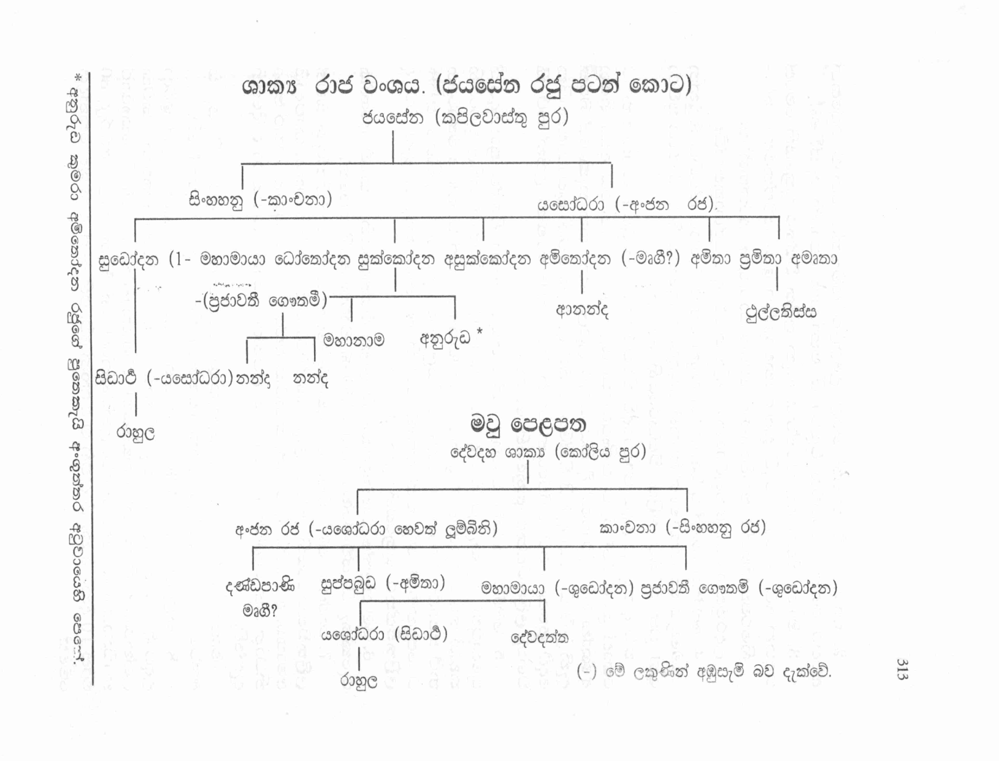
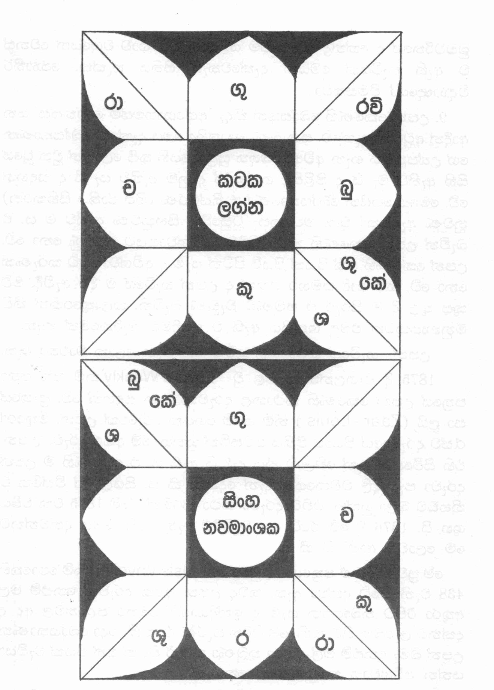

බුද්ධ චරිතය උපග්රන්ථය
1. සිංහහනු රජතුමාට සුද්ධෝදන, ශුක්ලෝදන, අශුක්ලෝදන, ධෝතෝදන, අමිතෝදන යැ යි පුත්තු පස්දෙනෙක් ද අමතාවී නම් දුවක් ද වූහ යි මැදුම් සඟි අටුවායෙහි කියන ලදි. ශුධෝදන, ශුක්ලෝදන, ධෝතෝදන, අමිතෝදන යැ යි පුතුන් සිවු දෙනෙකුන් ද අමිතා, ප්රමිතා යැ යි දූන් දෙදෙනෙකුන් ද වූ බව මහා වංශයෙහි දැක්වේ. ශුද්ධෝදන, අමිතෝදන, ශුක්ලෝදන, අශුක්ලෝදන යැ යි සොහොයුරන් පස් දෙනා ගේ නම් සූත්ර නිපාත අටුවායෙහි දක්නා ලැබේ. වප්ප රජු ද බුදු රජු ගේ සුළු පියෙකැ යි අංගුත්තර අටුවාහි පෙනේ.
ශුද්ධෝදන, ශුක්ලෝදන, ද්රෝණෝදන, අමෘතෝදන යැ යි සොහොයුරෝ සිවු දෙනෙක් ද, ශුද්ධා, ශුක්ලා, ද්රෝණා යැයි සොහොයුරියෝ තිදෙනෙක් ද වූහ යි අවදානකල්ප ලතා පල්ලව නම් සංස්කෘත ග්රන්ථයෙහි සඳහන් වේ.
ශුද්ධෝදන රජු ගේ දරුවෝ තිදෙනෙකි, ඔහු නම් නන්ද කුමරිය, සිද්ධාර්ථ කුමාරයන් වහන්සේ, නන්ද කුමරු යන තිදෙනා යි. මෙයින් නන්දා තොමෝ සිද්ධාර්ථ කුමරුටත් වැඩි මහලු යි. නන්ද කුමරු තිදෙනාගෙන් ම වයසින් බාලයා යි. නන්දා නන්ද දෙදෙනා ප්රජාවතී ගෞතමියගෙන් ද සිද්ධාර්ථ කුමරු මහාමායා බිසොව ගෙන් ද සුදොවුන් රජුට ලැබුණු දරුවෝ යැ යි දත යුතු.
සූර්ය වංශයෙහි රාජ පරම්පරාව
මහාසම්මත (මනුරජ)
රෝජ
කාලරජත
වරරෝජ
කල්යාණ
වරකල්යාණ
මන්ධාතු
චර
උපචර
චේතිය
මුචල
මුචලින්ද
සාගර
සාගර
හරථ
හගීරථ (හගීරස)
රුචි
සුරුචි
ප්රතාප
මහා ප්රතාප
පනාද
මහා නාද
දෙනෙක්
සුදර්ශන
මහා සුදර්ශන
නේරු
මහා නේරු
අර්චිෂ්මත්
(මේ රජහු අට විසි දෙන කුසාවතී රාජගෘහ මිථිලා යන නුවර තුනෙහි රජය ජයසේන කැරැවූහු).
අර්චිෂ්මත්
සාගර
ශුද්ධෝදන
මඛාදෙව (මිථිලායෙහි)
(මේ පරපුරෙහිම)
නිමි
ප්රේමකර
අශෝක
(මේ පරපුරෙහි රජුහු බොහෝ දෙනෙක් බරණැස රජය කැරවූහ.)
උපෝසථ
දිලීප
රඝු
අජ
දශරථ
රාම
(මේ පෙළපතෙහි මැ)
විජය
(පිළිවෙළින් දරු මුණුබුරු පසළොස් දෙනෙක්)
ඔක්කාක
කුස
සුජාත
-------- ශාක්ය වංශය ආරම්භය මෙතැන් සිට
ඉක්ෂ්වාකු උල්කා මුඛ ආදි සතර
(කපිල වාස්තු පුරාරම්භය)
නිපුර
(දරු මුනුබුරු අට දෙනෙක්)
සීහසුර
(දරු මුනුබුරු පරපුරෙහි)
ජයසේන
සිංහහනු
ශුද්ධෝදන
සිද්ධාර්ථ
(භාග්යවතුන් වහන්සේ).
මේ මහා බෝධිවංශ ග්රන්ථි පද විවරණයේ ආ පරිදියි. දික්සඟි අටුවා ආදියේ රජ පෙළපත මෙයට මඳක් වෙනස් ලෙස පෙනේ.

2. මායා දේවී නකත් කෙළි උළෙලට සම්බන්ධ නොවී රජුගෙන් අවසර ගෙන පෙහෙවස් වුසුවා යි මහායාන පොත්හි දැක්විණ.
3. මායා බිසව දුටු ස්වප්නය ගැන ලලිත විස්තර සූත්රයෙහි මෙසේ සඳහන් වේ :- මායා දේවි සුඛශයනප්රසුප්තා ඉමං ස්වප්නමපශ්යත් :- හිමරජතනිහශ්ව ෂඩිවිෂාණඃ සුවරණවාරුභූජඃ සුරක්තශීර්ෂඃ
උදරමුපගතො ගජප්රධානො ලලිතගතිර් දෘඨවජ්රගාත්රසන්ධිඃ
4. බෝසතාණන් තුසීලොවින් ච්යුත වන්නට පෙර ස්වකීය ඔටුන්න මෛත්රෙය බෝසෙතාණන් හිසෙහි පළඳවා එ තුමනට දිව්ය රාජ්යය පවරා ඉන් චුත වූ බව ලලිත විස්තරයෙහි පෙනේ.
තව ද පසු දා උදය මායාදේවි පිරිවර ස්ත්රීන් කැටුව අශෝක වනයට ගොස් සුදොවුන් රජුට පණිවුඩයක් යැවූ බව ද, රජ එය අසා ගියහු අශෝක වන ද්වාරයේ දී සිය සිරුර උසුලා නො ගත හැකි සේ බරක් දැනී “මේ කිමෙක් දැ?” යි විස්මිත වූ බව ද, එ කෙණෙහි ශුද්ධාවාසකායික දෙව් පුතකු අර්ධ ශරීරයෙන් පෙනී සිට බෝසතාණන් උපන් බව කී වගත් ලලිතවිස්තර සූත්රයෙහි පෙනේ.
5. බෝධි සත්ත්ව මාතාව ගේ පහසුව සඳහා විශේෂ ප්රාසාදයක් සුදොවුන් රජු කැරැවූ බව ද ශක්ර සුයාමාදී දෙවියනුත් කපිල පුරයෙහි තන්හි තන්හි ප්රාසාද මැවූ බව ද බෝධිසත්ත්වයන් වහන්සේ මහාව්යුහ නම් සමාධියේ ආනුභාවයෙන් ඒ සියලු ප්රාසාදයෙක ම මෑණියන් සහිත ව පෙනෙමින් මවු කුස දකුණු පසෙහි බද්ධපර්යංකයෙන් හුන් බව ද ලලිත විස්තර සූත්රයෙහි දැක්වේ.
6. මේ ප්ලක්ෂ වෘක්ෂයෙකැ’ යි ලලිත විස්තරයෙහි දැක්වේ. අශෝක රුකෙකැ යි ය්වංජීශ්වාං ගේ හ්රමණ වාර්තායෙහි පෙනේ.
7. බෝසතාණන් බිසව ගේ දකුණැලයෙන් ඍද්ධියෙන් නික්මුණු බවත් ලලිතවිස්තරයෙහි දක්වන ලදී. යශෝධරා දේවී, ඡන්නාමාත්ය, කාළුදායි අමාත්ය, ආජානීය ඇත් රජ, කන්ථක අස්රජ, මහ බෝරුක, සතර මහා නිධාන යන මොවුන් ද මෙ දින ම උපන්හ යි ජාතකට්ඨ කථා ආදියෙහි දැක්වේ.
මායා දේවීන් ඇඳක සැතැපුණු පසු බෝසත් උපත වී යැ යි අශ්වඝෝෂයන් ගේ බුද්ධචරිත (සමහර) පිටපතෙක සඳහන් වේ.
8. කලියුග වර්ෂ 2478 හි වෙසක් මසැ පුණු පොහෝ ලත් ඉරිදා උදයාදි එකොළොස් පෑ විනාඩි හතරට විසානැකතින් කටක ලනයෙන් සිංහ නවාංශකයෙන් බෝසතාණන් උපන්හයි කෞමාර නාඩිවාක්යයේ සඳහන් වේ. උන්වහන්සේ ගේ ජීවිත කාලය අවුරුදු 80 මාස 10 දින 15 කැ යි ද එහි ම සඳහන් වේ. එහි දැක්වෙන බුද්ධ කේන්ද්රය මෙසේ ය.

හෙළදිව බැවහාර වන බුද්ධකේන්ද්රයේ දස වැන්නේ බුධ රවි එකට සිටුනා බව දැක්වෙතත් නාඩිපොත්හි එන කේන්ද්රයේ ඒ දෙදෙනා ගෙන් බුද දසයේත් රවි එකොළොසේත් ඇතැයි දැක්වේ. කාකයර්නාඩි බුද්ධචරිතයේ ද කේන්ද්ර මේ සැටිම ය. බාග විට භාව වශයෙන් වෙනස් ව ඇති සැටියක් මෙයින් දැක්වෙතැයි සිතිය හැක්ක. ජ්යොතිර් විද්යාඥයෝ විමසත්වා.
9. උපන් කෙණෙහි බෝසතුන් කීදෑ “අග්ගොහමස්මි ලෝකස්ස” යන ආදීන් අටුවාහි දැක්වේ. සකු බණ පොත්හිද මෙය දැක්වේ. බෝසතාණන් ගේ උත්පත්තිය ගැන අච්ඡරියබ්භූත සූත්රාදියෙහි තුසී ලොවින් චුත වූයේ සිහි ඇතිව මැ යි ද පිළිසිඳ ග ත් දැනුම ඇතිව යැ යි ද සඳහන් වේ. මෙසේ හෙයින් බෝසතාණෝ ජාතිස්මරණ (ගිය ජාතිය සිහිකරන) නුවණ ඇත්තෝ වූහ. මව කුසැ වුසුවේත් සිහිනුවණ ඇතිව ම ය. එ බැවින් උපන් කෙණෙහි කථා කිරීම අවිශ්වාසයට කරුණු නො වේ. උපන් කෙණෙහි සත් පියක් පියුම් පිටින් යෑම ද අවිශ්වාසයට කරුණක් නො වේ. ගව ආදි සමහර සතුන් ද උපන් හැටියේ ම දිව ඇවිදී. මව් කුස තුළ දී ම සිරුර එ පමණට වැඩුණ බැවිනි. කලාතුරෙකින් කිසි මනුෂ්යයකුටත් එබඳු ශක්තිය ඇති ව ඉපදීමට බැරිකමෙක් නැත.
උපන් හැටියේ කථා කළ තවත් අය ගැන ලෝක වාර්තා ඇත.
1875 දී එංගලන්ත යේ පළ වු Loydi's Weekly නම් සතිපතා පත්රයේ උපන් කෙණෙහි කථාකළ දරුවකු ගැන සඳහන් වේ. ප්රංශයේ සා ලුයි (Zaar - Louis) නම් ගමේ ගෙයක දරුවෙක් උපන. මිතුරෝ රැස්ව දරුවාගේ පියාට ප්රීතිය පවසමින් හුන්හ. මේ අතර දරුවා උපන. එහි සිටියෙක් දැන් වේලාව කීය දැ? යි ඇසී ය. එ කෙණෙහි ම උපන් දරුවා පැහැදිලි වචනයෙන් දැන් දෙකයි’ කී ය. සියල්ලෝ විස්මිත ව නිහඩව බලා හුන්හ. එවිට දරුවා කථා කරමින් “මේ 1875 වන වර්ෂය ශුභ යි. 1876 දී මේ රටේ ලේ වැගිරීම් ඇති වෙයි. මෙය දන්වන්නට මෙ ලොවට ආමි” යි කී ය.
මේ ප්රවෘත්තිය ඒ පත්රයෙන් උපුටා ගෙන lsis Unveiled (https://en.wikipedia.org/wiki/Isis_Unveiled) නම් පොතෙහි 438 වැනි පිටේ දක්වා ඇත. තවද උපන් අළුත දරුවන් නෙළුම් මල් අතුරා පිට තබාගෙන යෑම ද ඉන්දියාවේ සමහර පළාත්වල අද ද දන්නට ලැබෙන සිරිතකි. මේ සිරිත පැරණි එකෙකි. එදා බෝසතාණන් උපන් බිමැ නෙළුම් මල් අතුරා තුබුණා නම් ඊ පිටින් සත් පියක් වැඩියා යන්න අවිශ්වාස කටයුතෙක් නො වේ.
සාරාසැකිකප් ලක්ෂයක් පෙරුම් පිරූ බෝසතාණන් සෙසු සාමාන්ය මිනිසුන් ගේ ගණයෙහි ලා සැලැකීම වැරැදි ය. ලොව පහළ වූ හැම දැයින් ම සෙස්සනට වැඩි දෙවියන්ටත් වඩා උසස් ආශ්චර්ය්ය පුද්ගලයෙකි මහා බෝසතාණෝ.
10. පුත්ර ප්රසුතිය අසා සුදොවුන් රජ ලුම්බිනියට ගියහ යි ද පෙරළා එන ගමනේ ශාක්යයන් ගේ දෙවි වූ ශාක්යවර්ධන දෙවියාගේ කෝවිලට ආ හයි ද ප්රජාවතී ගෞතමීන් බෝසතාණන් වඩාගෙන එහි ඇතුල් වූ හයි ද එ කෙණෙහි දේව රූපය නැගිට නමස්කාර කළ හයි ද ය්වංජීශ්වාං ගේ ගමන් වාර්තායෙහි පෙනේ. මේ දෙවොල අහයා නම් දෙවඟනක ගේ කෝවිලක් බව ද මේ සිද්ධියෙන් පසු බෝසත් දේවාධිදේව නම් වී යයි ද මහාවස්තුයෙහිත් ටිබැට් පොත්වලත් පෙනේ. ලුම්බිනියෙන් පෙරළා ඊම සතියකින් පසුවී යැ යි සමහර සංස්කෘත පොත්හි පෙනේ.
ශාක්යවර්ධන නම් දේවතාවා ගේ දේවාලයට ශාක්යයන් තම දරුවන් ගෙන ගොස් නමස්කාර කරවන බව ද, එ සිරිතට අනුව බෝසතාණන් ලවා ද වන්දවන්නට තැත් කළ බව ද එ කෙණෙහි දේව රූපය උන් වහන්සේ ගේ පා මුල වැටුණ බව ද අවදාන කල්පලතාපල්ලවයෙහි පෙනේ.
බෝසතුන් දකුණු පය දෙවොල ඇතුළෙහි තබනු සමග ම එහි තුබූ ශිව, ස්කන්ධ, නාරායණ, කුවේර, චන්ද්ර, සූර්ය්ය, වෛශ්රවණ, ශක්ර, බ්රහ්මාදි දේවරූප බෝසතුන් ගේ පා මුළ වැටී බෝසත්නට ගාථාවලින් ස්තුති කළ බව ලලිතවිස්තරයෙහි දැක්වේ.
11-12. කාලදේවල නමින් අටුවායෙහි දක්වන ලද්දේ අසිත තවුසා ම ය. මෙ තෙම අසිතදේවල නමින් දන්නා ලද්දේ ය. අසිත තවුසා ගේ බෑණනු වූ කිෂ්කින්ධා පර්වත වාසී නාරද තපස්වීහු බෝසතුන් උපන් දා ඇති වූ මහත් එළිය දැක ඒ කිම් දැ යි අසිත තවුසහු ගෙන් ප්රශ්න කළ බව ද, එහි තොරතුරු අසිත තවුස් විස්තර කළ බව ද, ඉක්බිති ඒ දෙදෙන බෝසතුන් දක්නට ආ බව ද අවදාන කල්පලතා පල්ලවයෙහි කියන ලදී. උතුරේ හිමාලය පර්වතයෙහි සිට අසිත තවුසා සිය බෑනණු වූ නරදත්ත මානවකයා හා ආ බව ලලිත විස්තරයෙහි සඳහන් වේ. ඒ තවුසා දකුණෙහි වින්ධ්යා පර්වතයෙහි සිට නාලකයා කැටුව ආ බව මහා වස්තුයෙහි දර්ශිත යි.
13. බෝසතාණන් ගේ ලක්ෂණ පරීක්ෂා කළ බමුණන් අට දෙනා ගේ නාම: රාම, ධජ, ලක්ඛණ, මන්ති,
කොන්ඩඤ්ඤ, භොජ, සුයාම, සුදත්ත යැ යි අටුවාහි පෙනේ. මිලිඳු පැනයෙහි මඳක් වෙනස් ලෙස රාම, ධජ, ලක්ඛණ, ජාතිමන්ත, යඤ්ඤ, සුයාම, සුභොජ, සුදත්ත යැ යි දක්වන ලදී.
14. මහාවස්තු ආදී සංස්කෘත පොත්හි බෝසතාණන් ගේ නම සර්වාර්ථසිද්ධ යැ යි පෙනේ. ලලිත විස්තරයෙහි
සිද්ධාර්ථ යැ යි ද සඳහන් වේ.
15. අන්තඃකල්පාරම්භයේ දී දෙවියන් සෘෂීන් මගින් මහා පුරුෂ ලක්ෂණ විද්යාව දුන්හයි අම්බට්ඨ සුත්ත අටුවාහි දැක්වේ. මෙහි යටත් පිරිසෙයින් මහා පුරුෂ ලක්ෂණ එකක්වත් ඇති පිනැතියන් උපදනා කාලය මා පියන්ගේ නම් ගම් ආදිය දැක්වේ. මේවා අද නාඩි වාක්ය නමින් ප්රසිද්ධය. සමහර සෘෂින්ගේ වාක්යවල මතු සිදුවන සමහර දෑ අනියමින්ද සමහරුන්ගේ වාක්යවල නිශ්චය කොටද දැක්වේ. මහ පටැඟිල්ල බලාද සම්පූර්ණ ඵල කියත හැකි ක්රම සමහරෙක දැන්වේ.
16. බෝසත් උපන් පසු සතියක් ඇතුළත දී මායා දේවියගේ මරණය වී යැයි සමහර සංස්කෘත ග්රන්ථවල පෙනේ. මායා බිසව දෙව් පුතකුව පුත්ර ස්නේහය හේතුවෙන් බෝසත් කුමරු හුන් කාමරයට අරක් ගත් බව ලලිත විස්තරයෙහි පෙනේ.
17. වප්මඟුල් වේලෙහි බෝසතාණන් යහනෙහි ම හිඳ ප්රථම ධ්යානය ඉපදැවූ බව අටුවාහි කියන ලදී. අහස් වැඩි බවක් කිසි අටුවාවෙක නොපෙනේ. මිලිදු පැනයෙහි සතරවන ධ්යානය වඩා අහස් හි පළක් බැඳ හුන් බව කියන ලදී. බෝසතාණන්ට ඇවිදින්නට පුලුවන් තරම් කාලයේදී දිනක් පිය රජු හා උයනට යන ගමනේදී ගොවිපලකට පැමිණි බවද, එහිදී නගුලට අසුවී මළ සර්පයෙකුත් මැඬියකුත් දැක බොහෝ සංවේගයට පැමිණ පසෙක දඹරුකක් යටට වී ඉඳ ධ්යාන වඩා ප්රථම ධ්යානයට සමවන් බවද. ඒ වෙලායෙහි හිමාලයේ සිට වින්ධ්යා පර්වතයට අහසින් යන සෘෂීන් පස් දෙනෙක්නට ඒ පෙදෙසින් යා නොහී බැස බෝසතුන් දැක වැඳ ප්රශංසා කොට ගිය බවද භෝජන සමයෙහි කුමරු නො දැක සොයා ඇවිදුනා ඇමතියන් බෝසතුන් ඒ රුක් මුල ඉන්නා දැක රජුට දැන්වූ බවද රජු අවුත් එහි ඡායාව වෙනස් නොවීම් ආදී ආශ්චර්ය දැක වැද බවද මහාවස්තුයෙහි සඳහන් වේ. මෙය වූයේ වයස විසි නවයේදී යැයි දිව්යාවදානයේ ද ටිබැට් බෞද්ධ පොත්හි ද පෙනේ. මේ සම්බන්ධයෙන් ඇතැම් මහායාන පොත්හි ප්රවෘත්තිය අටුවාවට සම යි.
18. බෝසත් කුමරා යහපත් ධන්ය පුණ්ය ගුණ ඇති ඉතා හොඳ මිතුරන් ඇති ව සැප සේ කල් යැවූයේ ය. වත්ස නම් බ්රාහ්මණ කුමරා වැළි කෙළියෙහි පටන් එක් ව කල් යැවූ බෝසතාණන් ගේ හිත මිතුරෙකි.
19. සබ්බමිත්ත (සර්වමිත්රයා) බෝසත්නට ඉගැන්වූ බව මිලින්ද ප්රශ්නයෙහි පෙනේ. බෝසත්හට ශිල්ප ඉගැන් වූ ඇදුරා විශ්වාමිත්ර නමැ යි සංස්කෘත බෞද්ධ පොත්හි පැනේ. “සර්ව මිත්ර” “විශ්වා මිත්ර” යනු සමානාර්ථ නාම යි.
20. බෝසතාණන් සියලු විද්යාවන් මනා ව ඉගෙන නිමවා ඉක්බිති “බ්රාහ්මී” නම් අක්ෂර විශෙෂයෙක් නිපද වූ හයි ක්ෂේමේන්ද්ර පඬිහු කළ බුද්ධ ජන්ම නම් පොතේ සඳහන් වේ. “බ්රාහ්මී අක්ෂර” යනු අශෝකාක්ෂරයනට නමෙකි.
“වර්ධමානඃ කුමාරො’ථ
සර්වවිද්යාසු පාරගඃ
ලිපිප්රවීණො’ හිනවං
ලිපිං බ්රාහ්මීං විනිර්මමෙ” (බුද්ධජන්ම)
වැඩෙනා ඒ (සර්වාර්ථ සිද්ධ) කුමරු සියලු විද්යාවන්හි පරතෙරට පැමිණියේ ලිවීමෙහි සමර්ථ වූයේ බ්රාහ්මී නම් අභිනව ලිපි විශේෂයක් (අකුරු වගයක්) නිපදවූයේ ය” යනු එහි තේරුම යි.
21. සුදොවුන් රජතුමා ප්රාසාද තුනක් කරවා තම පුත්රයාට කුමරියක ආවාහ කොට දෙනු සඳහා ශාක්යයනට හසුන් පත් යැවී ය. “සිදුහත් කුමරු රූපසම්පන්න වුවත් ශිල්පයක් නො දනිති” යන ආදීන් ඔහු බෝසතාණන් ලඝු කොට සලකා තමන් අදහස් කියා එවූහ. එ පවත් පිය රජ සිදුහත් කුමරුට දැන්වී ය. එවිට නෑයන් රැස් කරවා ඔවුන් මධ්යයෙහි, බෝසත් තමා දත් ශිල්ප දැක්වූයේ ය. එයින් සතුටු වූ ශාක්ය රජුහු තම දූ දරුවන් සරසා එවූහු. සුප්රබුද්ධ ශාක්ය රජු ගේ දූ වූ භද්රකාංචනා (හෙවත් යශෝධරා) කුමරිය බෝසතාණන් ගේ අග මෙහෙසි කොට අභිෂේකය කරන ලදී. නෑ රජුන් එවූ ධීරා, වීරා, භද්රා, උපශමා, උත්තරා ආදී ශාක්ය කුමරියන් සතළිස් දහසක් පමණ අන්තඃ පුරයෙහි වූහ. ඉන් එක් පායෙක දස දහසක් පමණ කුමරියෝ යශෝධරා වගේ පිරිවර වූහ. දණ්ඩපාණී ශාක්ය රජු ගේ දූ වූ ගෝපා තොම බෝසතාණන් ගේ අගමෙහෙසි වී යැ යි ලලිත විස්තරයෙහි පෙනේ. බෝසත්නට යශෝධරා, කිසාගෝතමී, මනෝහරා යැයි මෙහෙසියෝ තුන් දෙනෙක් වූහ යි චීන පොත්හි සඳහන් වේ. කිසාගෝතමී දණ්ඩපාණී ශාක්ය රජු ගේ දූ යැ යි ද, යශෝධරා මාහානාම ශාක්ය රජු ගේ දූ යැ යි ද චීන බෞද්ධ ග්රන්ථ කාරක මතයි. එහෙත් ගෝපා භද්දකච්චානා මනොහරා බිම්බා සහ සියලු නම් යශෝධරා දේවීන් සඳහාම බැවහර වී යයි සමහර මහායාන පොතක දැක්වේ. නාඩි ග්රන්ථවල යශෝධරා පමණක් බෝසතාණන් ගේ දේවී වූ හ යි දැක්වේ. ඇලෙක්සැන්ඩර් ක්සොමා විසින් ටිබැට් බෞද්ධ ග්රන්ථවලින් කරුණු ගෙන ලියූ ලියවිල්ලක ගෝපා, යශෝධරා. උත්පලවර්ණා යැ යි මෙහෙසියන් තිදෙනෙකුන් ගේ නම් ද මෙහි උත්පලවර්ණා යනු මෘගජා නම් කුමරිය බව ද කියන ලදී[1] යශෝධරා රාහුල මාතා නමින් ද, බිම්බාදේවී නමින් ද භද්දකංචනා නමින් ද ප්රකට වූවා ය. භද්දකංචනා යනු භද්දකච්චානා යැ යි ව්යවහාරයේ දී වෙනස් ව ආ බව පෙනේ.
22. මෙය නාඩිග්රන්ථවලැ එන පුවතෙකි.
23. ජරාවේශාදියෙන් පෙනුණේ දිව්ය පුත්රයෙකැ යි ලලිත විස්තරයෙහිත් අර්ථ කථාහිත් දැක්වේ.
24. “රාහුලො ජාතො” යන්නෙහි තේරුම නම් රාහු වැනි ග්රාහකයෙක් උපනි. රාහු ඉර සඳ අල්ලා ගන්නාක් මෙන් මා පැවිදි වීමට යෑ නොදී අල්ලා ගන්නෙක්, ගිහිගෙයි මා නවත්වන්නෙක් පහළ වීය යනු සමහරුන්ගේ විවරණ යි. වාසවදත්තා යන්න පාළියෙහි වාසලදත්තා යි පෙනේ. මෙයින් වාසව යන්න වාසුල යැ යි වූ සේ ම රාඝව යන්න රාඝුල රාහුල යැ යි වීය යනු අප අදහසයි. එ විට රාහුල යනු රඝු පරපුරැ දරුවෙක් ය යන අරුත දෙයි. ශාක්ය රජහු රාඝවයෝ යි.
25.
නිබ්බුතා නූන සා මාතා
නිබ්බුතා නූන සො පිතා
නිබ්බුතා නූන සා නාරී
යස්සායං ඊදිසො පති”
මෝ තොම දණ්ඩපාණිශාක්ය රජුගේ දූ යැ යි චීන පොත් හි සඳහන් වේ. මෝ තාම මෘගී නම් වූ අනඳ තෙරුන්ගේ මෑණියෝ යැ යි මහා වස්තුයෙහි ද බෝසතුන් ගිහි ගෙන් නික්මෙන්නට සතියකින් පෙර බෝසතුන් ගේ මෙහෙසියක් වූ හැ යි ටිබැට් පොත්හි ද පෙනේ.
26. ශාක්යක්රෞද්ධ්ය (කෝළිය) මල්ල රාජ්යය ඉක්මවා මෛනෙය (මෙනක) යන් ගේ අනුවෛනේය නම් නිගමයට බෝසත් පසු දා පාන්දොර පැමිණි බව ද එය කපිලවාස්තුයෙහි සිට යොදුන් සයක් දුර පිහිටි බව ද එහි දී අසු පිටින් බැස ඡන්දකයා අසු හා පෙරළා එවූ බව ද පසුව එහි ඡන්දක නිවර්තන නම් චෛත්යයක් වූ බව ද ලලිත විස්තරයෙහි දැක්විණ.
27. බෝසතාණන් තමන් කැපූ හිසකේ වැටිය ගෙන “මම බුදුවන්නෙක් නම්” මෙය අහස රැඳේවා” යි අධිෂ්ඨාන කොට අහසට විසි කළ කෙණහි සක් දෙව් රජ එය රන් කරඬුවෙකින් තවුතිසා භවනයට ගෙන ගිය බව ද ඉක්බිති එය නිදන් කොට සිළුමිණි සෑය කළ බව ද බෝසතාණන් හැද කසී සළු දෙක ඝටීකාර බඹහු ගෙන ගොස් බඹලොව සිළුමිණි සෑය කළ බව ද අටුවාහි පෙනේ.
28. ශුද්ධාවාසයෙහි දෙව් පුතකු වැද්දකු ගේ වේශයෙන් ශ්රමණ පරීෂ්කාර ගෙන එහි පැමිණි බව ද බෝසතාණන් එ පිරිකර ඔහුගෙන් ලබා ගත් බව ද ලලිතවිස්තරයෙහි පෙනේ.
29. බෝසතාණන් තාපස ප්රව්රජ්යායෙන් පැවිදි වීමේ දී සමාදන් කළේ ආජීවාෂ්ටමක ශීලය යි. ආජීවාෂ්ටමක ශීලය නම් ත්රිවිධ කාය දුශ්චරිතයෙන් ද චතුර්විධ වාග් දුශ්චරිතයෙන් ද මිථ්යාජීවයෙන් දැ යි මෙසේ මෙකී අට වැදෑරුම් වරදින් වැළැකීම සමාදන් කොට ගෙන රකිනා ශීලය යි. එහි ත්රිවිධ කාය දුශ්චරිත යන තන්හි කාම මිථ්යාචාරය වෙනුවට අබ්රහ්මචර්යාව හෙලා මේ තන්හි දී අර්ථ ගත යුතු යි.
30. රජගහ නුවර එකල මගධ රට ප්රධාන නගරය යි. එයට ගිරිව්රජ යන නමෙක් ද වී ය. පාණ්ඩව, ගෘධුකූට, වෛහාර, වෛපුල්ය, සෘෂිගිරි යන පර්වතවලින් වට වූ (වැටෙකින් වට වූ) ගාලක් මෙන් පිහිටි හෙයින් ගිරිව්රජ යයි බැවහර වී ය.
30. සෙනානි නිගමය - මහාමන්ධාතු රජු ගේ සේනාපති සෙනානී නම් වීය. එ රජ දිව්යලෝකයට ගොස් රජය
කරවන කල්හි ඔහු ගේ සේනානිහු වුසූ ඒ ස්ථානය උපචාර වශයෙන් සෙනානි නම් වී ය. එයට සර්වදිශාභාගයෙන් ජනයා එළඹෙන්නෙන් නිගම නම් වී. සෙනානි නම් ගම්හි නායක කුටුම්බික සෙනානී නම් වී යැයි මහාබෝධිවංශ ගැටපදයේ සඳහන් වේ.
ලලිතවිස්තරාදියෙහි මෙයට සෙනපතිග්රාම යැ යි කියන ලදී.
31. බෝසත් මළේ යැ යි සමහර දිව්ය පුත්රයෙක් ගොස් තව්තිසායෙහි මහාමායා දෙව්පුතුට දැන් වී ය. හේ දිව්යප්සරාවන් හා වහා බෝසත් වැටී හුන් තෙනට අවුත් බලා ඇසින් කදුළු වගුරුවමින් මතු සඳහන් විලාප කියා හැඬී යැ යි ලලිතවිස්තරයෙහි පෙනේ.
යදා ජාතො’ සි මෙ පුත්ර වන ලුම්බිනිසාහ්වයෙ
සිංහවච්වාග්රහීත් සත්වං ක්රාන්තඃ සප්තපදාන් ස්වයම්.
.
දිශශ්චාලොක්ය චතුරො වාචා ප්රව්යාහෘතා ශුහා
ඉයංමේ පශ්චිමා ජාතිඃ සො තෙන පරිපූරිතා.
.
අසිතෙන සි නිර්දිෂ්ටො බුද්ධො ලොකෙ හවිෂ්යති
ක්ෂුණ්ණං ව්යාකරණං තස්ය න දෘෂ්ටං තෙන නිශ්චිතං.
.
චක්රවර්තිශ්රියං පුත්ර නපි හොක්තා මනොරමාම්
න ච බොධිමනුප්රාප්තො යාතො’සි නිධනං වනෙ.
.
පුත්රාර්ථෙ කං ප්රපද්යාමි කංච ක්රන්දාමි දුඃඛිතා
කො මෙ දද්යෙක පුත්රස්ය කිංචිත් ප්රාණය්ය ජීවිතම්.
බෝසතාණෝ ප්රකෘති සිහිය ලැබ තමන් ඉදිරියෙහි හඬන්නාහු අසා කවුරු දැ?” යි ඇසූහ. එවිට
මායා දෙවි පුත්,
“මයා තු දශමසාන් වෛ
කුක්ෂෞ වජ්ර ඉතා ධෘතඃ
සා තෙ’හං පුත්රක මාතා
විලපාමි සුදුඃඛිතා” යි
ඉක්බිති බෝසත් දෙව්පුතු සනසා යැවී ය.
32. බෝසත් මුළු මනින් ම ආහාර පාන හළේ යැ යි ජාතක අටුවා ආදියෙහි සඳහන් වෙතත් කොල්ලු ආදි යමක් තම්බා ගත් දියෙන් යැපීමෙන් ආහාර අඩු කිරීම සීමා කළ බව මඳුම් සඟි අටුවා ආදියෙන් පෙනේ.
33. දිනා මිස නැත හොත් රණ බිමැ වැටී මැරෙතත් පසු නො බසින බවට ලකුණක් වශයෙන් මුදු තෘණ ගසක් හිස පැළැඳ යෑම දක්ෂ යෝධයන්ගේ සිරිතෙක් වී ය.
34. මෙහි වැටුණු හෝ බැස (නික්ම යෑ නොහී) ඉන්නා මහණ බමුණෝ දක්නා ලැබෙත් යනු ලලිතවිස්තරානුගත අර්ථ වාචනය යි.
එෂා හි නමුවෙඃ සෙනා
කෘෂ්ණබන්ධොඃ ප්රතාපිනඃ
අත්රාවගාඪා දෘශ්යන්තෙ
එකෙ ශ්රමණ බ්රාහ්මණාඃ (ලලිත විස්තරයෙහි)
35. සතානුසාරිවිඤ්ඤාණ - ‘මේ දුෂ්කර ක්රියාව බුද්ධත්වයට මඟ නො වේ ආනාපාන ධ්යානය නම් එයට මඟ ය” යි මෙ සේ වරක් දෙකක් උපන් සිහියට අනතුරුව උපන් සිත සතානුසාරිවිඤ්ඤාණ (ස්මෘත්යනුසාරි විඥාන) නමි.
36. දුෂ්කර ක්රියා කරන බෝසත්හට බලා, බලගුප්තා, සුප්රියා, විජයසේනා, අතිමුක්ත කමලා, සුන්දරි, කුම්භකාරි, උඵවිල්ලිකා, ජටිලිකා, සුජාතා යන ග්රාමික දුහිතෲන් දස දෙන එම අවස්ථාවෙහි බොජුන් සාදා ගෙනවුත් පිළිගන්වමින් උපස්ථාන කළහයි ලලිත විස්තරයෙහි පෙනේ. තවද බෝසතාණන් ගේ යහපත පතා සුජාතාව එ ස වර්ෂයෙහි ම දින පතා බමුණන් 108 දෙනකුට දන් දී පින් අනුමෝදන් කළ බව ද මගේ භෝජන වළඳා බෝධිසත්ත්ව තෙමේ බුදු වේවා යි පතා සිටි බව ද ලලිතවිස්තරයෙහි ම දැක්වේ. දිනක් කෞපින මාත්ර වස්ත්ර කැබෙල්ලක් ලදොත් මැනැවැ යි බෝසත් සිතී ලු,
එ සමයෙහි සුජාතාවගේ රාධා නම් දාසියක මළ කල ඒ සිරුර රෙද්දක ඔතා අමු සොහොනෙහි දැමිණ. බෝසත් ඒ පාංශුකූල වස්ත්රය ගෙන දෙවියන් මැවූ පොකුණින් හෝ දා හැන්දේ යැ යි ලලිතවිස්තරයෙහි කියන ලදී.
37. මෙය කිමිදී නා ලොව ගිය බවත් නා රජහු එ මගින් කාරණය දැන නා සෙන් පිරිවරා බෝ මැඩ වෙත ආ බවත් අටුවාහි කියන ලදී.
38. සුජාතාව රන් තලිය පිටින් කිරිබත පිළිගැන්වූ විට “නැඟෙණියනි, මේ රන් තලියට කුමක් කරම්දැ”යි බෝසත් ඇසී. එය ඔබ වහන්සේට ම වේවා යි ඕ කීවාය. මෙ වැනි බඳුනෙකින් මට ප්රයෝජන නැතැ යි බෝසත් කී. “කැමැත්තක් කරන සේක් වා” යි සුජාතා කී. ඉක්බිති බෝසත් ඒ පිණ්ඩ පාත්රය ගෙන නෙරඤ්ජරා නදිය වෙත ගොස් දෙවියන් විසින් ප්රක්ෂිප්ත ගන්ධ පුෂ්පයෙන් සුවඳ කැවුණු දියෙන් නා ගොඩ වුත් එහි වැසි නාග කන්යාවක ගෙනවුත් පිරිනැමූ මිණිමුවා පුටුයෙහි හිඳ දන් වළඳා රන් තලිය කෙරෙහි අපේක්ෂා රහිතව එය නදියට දැමී ය. එය සාගර නා රජු බහුමාන පෙරටුව ස්ව භවනයට ගෙන ගොස් පූජ්ය වස්තු කොට තැබී ය. සක්දෙව් එය දැන ගුරුළු වෙසින් එහි ගොස් ගන්නට උත්සාහ කොට නො හැකි ව ප්රකෘති වේශයෙන් සිට යාච්ඤා කොට ඉල්ලා ගෙන දෙව්ලෝ ගෙන ගොස් පිදී ය. බෝසතු හුන් මිණි පළඟ එ නාග කන්යාව පූජ්ය වස්තුවක් කොට පිදුවා ය. සුජාතා තොම දුෂ්කර ක්රියා සමයෙහි බෝසතු ගේ සිරුරෙන් ගිලිහුණු කේශ මශ්රැන් මංගල වස්තු වශයෙන් ගෙන චෛත්යයක් කොට පිදුවා ය. මේ ලලිතවිස්තරාගත ක්රමයයි.
39. චිත්ත විශුද්ධි නම් - උපචාර සමාධි අපර්ණා සමාධි දෙකින් සිත භාවනා අරමුණෙහි පිහිටුවා නීවරණයන් කෙරෙන් ශුද්ධ කැරැ ගැනීම යි. ස්වස්තික (සොත්ථිය) බමුණා, බමුණු වෙසින් ආ තැනැත්තේ සක්දෙව් යැ යි ශ්වාංජ්ශ්වා - යාත්රා වාර්තාවේ සඳහන් වේ. ඔහු හමුවූයේ බෝරුකට දකුණින් යැ යි එහි ම කියන ලදී.
40. අපරාජිත පර්යංකයෙන් චතුරංග වීර්ය්යය ඉටා වැඩ ඉඳීම.
- 1.සම ගැලවී විසිරැ ගියත් බුදු වී මිස මින් නො නැඟිටිමි.
- 2.නහර ගැලැවී විසිරැ ගියත් බුදු වී මිස මින් නො නැඟිටිමි.
- 3.ඇට ගැලැවී විසිරැ ගියත් බුදු වී මිස මින් නො නැඟිටිමි.
- 4.මස් ලේ වියැලී ගියත් බුදු වී මිස මින් නො නැඟිටිමි.
මෙසේ අංග සතරින් යුත් වීර්ය්යය චතුරංග වීර්ය්ය නමි.
41. ආසන - ආසන වනාහි ගණනින් අසූසාර ලක්ෂයකැ යි ද එයින් සුවාසූවක් මැනැවැ යි ද ඉනුත් දෙ තිසක් ම වඩා යෝග්ය යැ යි දක්වා ඒ ආසන දෙ තිසේ නම් ඝෙරණ්ඩසංහිතායෙහි මෙසේ දැක්වේ:
සිද්ධං පද්මංතථා භද්රං මුක්තං වජ්රඤ්ච ස්වස්තිකම්
සිංහඤ්ච ගොමුඛං වීරං ධනුරාසනමෙව ච
.
මෘතං ගුප්තං තථා මත්ස්යං මත්ස්යෙන්ද්රාසන මෙව ච
ගොරක්ෂං පශ්චිමොත්තානං උක්කටං සකටං තථා
.
මයූරං කුක්කුටං කූර්මං තථෛවොත්තාන කූර්මකම්
උත්තානමණ්ඩුකං වෘක්ෂං මණ්ඩුකම් ගරුඬං වෘෂම්
.
සලභං මකරං වොෂ්ංට්රං භුජඞ්ගං යොගමාසනං
ද්වාත්රිංශදාසනානං තු මර්ත්යලොකෙ හි සිද්ධිදම්.
යෝගීනට සිද්ධිදානය කරන ආසන දෙ තිස මින් කියැවේ.
- 1.සිද්ධාසන
- 2.පද්මාසන
- 3.භද්රාසන
- 4.මුක්තාසන
- 5.වජ්රාසන
- 6.ස්වස්තිකාසන
- 7.සිංහසන
- 8.ගෝමුඛාසන
- 9.විරාසන
- 10.ධනුරාසන
- 11.මෘතාසන
- 12.ගුප්තාසන
- 13.මත්ස්යාසන
- 14.මත්ස්යෙන්ද්රාසන
- 15.ගෝරක්ෂාසන
- 16.පශ්චිමෝත්තනාසන
- 17.උත්කටාසන
- 18.සංකටාසන
- 19.මයූරාසන
- 20.කුක්කුටාසන
- 21.කුර්මාසන
- 22.උත්තාන මණ්ඩුකාසන
- 23.උත්තාන කුර්මකාසන
- 24.වෘක්ෂායන
- 25.මණ්ඩුකාසන
- 26.ගරුඬාසන
- 27.වෘෂාසන
- 28.සලහාසන
- 29.මකරාසන
- 30.උෂට්රාසන
- 31.භුජඞ්ගාසන
- 32.යෝගාසන
මෙයින් වජ්රාසන නම් :
ජඞ්ඝාභ්යඃ වජ්රවත් කෘත්වා ගුදපාර්ශවෙ පදාවුභෞ
වජ්රාසනං භවෙදෙතත් යොගිනාම් සිද්ධිදායකම්
කෙංඩා දෙක වජ්ර (දියමන්ති) මෙන් දැඩිකොට දෙපතුල් ගුද මාර්ගය දෙ පස තැබීමෙන් මේ යෝගීනට සිද්ධි දායි වූ වජ්රාසනය වන්නේ යැ යි දක්වන ලදී. වජ්රාසනය යනු සිද්ධාසනයට නමෙකැ යි ද හඨයෝගප්රදීපිකායෙහි කියන ලදී. සිද්ධාසනය මෙහි දැක්වූ වජ්රාසනයට සමාන යි. ලක්දිව ඔත් පිළිමවල පෙනෙන බද්ධපර්යංකය යෝගශාස්ත්රයෙහි සුඛාසන නමින් දන්නා ලදී.
42. විංශද්වස්තුක සත්කායදෘෂ්ටිය
1-5 රූපාදී ස්කන්ධ පසින් එකක් ආත්ම යැ යි ගැනීම.
6-10 ඒ ආත්මය. රූපය,වේදනා, සංඥාව සංස්කාර හෝ විඥානය ඇත්තෙකැ යි ගැනීම.
11-15 රූපාදී පසින් යමක් කෙරහි ආත්මය පිහිටියේ යැ යි ගැනීම.
16-20 ඒ ආත්මය කෙරෙහි රූප, වේදනා, සංස්කාර හෝ විඥානය පිහිටියේ යැ යි ගැනීම.
43. සොළොස් වැදෑරුම් සැකය නම්:
- 1.අතීත භවයෙහි වීම් ද?
- 2.අතීත භවයෙහි නො වීම් ද?
- 3.අතීත භවයෙහි කවරෙක් වීම් ද?
- 4.අතීත භවයෙහි කෙසේ වීම් ද?
- 5.අතීත භවයෙහි කවරෙක් ව කවරෙක් වීම් ද?
- 6.මතු භවයෙහි වන්නෙම්ද?
- 7.මතු භවයෙහි නො ව න්නෙම් ද?
- 8.මතු භවයෙහි කවරෙක් වන්නෙම් ද?
- 9.මතු භවයෙහි කෙසේ වන්නෙම් ද?
- 10.මතු භවයෙහි කවරෙක් ව කවරෙක් වන්නෙම් ද?
- 11.දැන් වෙම් ද?
- 12.දැන් නො වෙම් ද?
- 13.දැන් කවරෙක් ව ඉඳිම් ද?
- 14.දැන් කෙබඳු ව ඉඳිම් ද?
- 15.කොයින් ආයෙම් ද?
- 16.කොහි යන්නෙම් ද?
මෙ සේ මේ සොළොස් තන්හි සැකය යි.
44. සත්තානුදස්සනාවීථි: මෙහි විස්තර විශුද්ධිමාර්ගයේ මග්ගාමග්ගදස්සන විසුද්ධි නිද්දේසයේ මුල් කොටසින් දත යුතු යි.
45. විසුද්ධි මාර්ගයේ මග්ගාමග්ගඤාණදස්සන විසුද්ධි නිද්දේසයෙන් විස්තර දත යුතු යි. ව
45. උදයව්යය ඥානය : උදය යනු හට ගැනීමයි. ව්යය යනු විනාශය යි. ස්කන්ධයන්ගේ පහළ වීමත් බිඳීමත් දැකීම උදය වය ඤාන (උදයඛ්ඛය ඤාණ) නමි.
46. භංගානුපස්සනා ඤාණය : හට ගැනීම හැර භංග (බිඳීම්) මාත්රය දැකීම (බලන නුවණ) භංගානුදර්ශන ඥන (භංගානුපස්සනා ඤාණ) නමි.
47. භයතොපට්ඨාන ඤාණය : භංග (බිඳීම්) වශයෙන් ඉදිරියෙහි පෙනි පෙනී සිටිනා ත්රෛභූමක ධර්මයන් භය වශයෙන් උවදුරු වශයෙන් දැකීම භයතො පට්ඨාන ඤාණ නමි.
48. ආදීනව ඤාණය : භය වශයේ දුටු ත්රෛභූමක ධර්මයන් ගේ දෝෂ අගුණ දැකීම ආදීනව ඤාන (ආදීනව) ඤාණ නමි.
49. මුඤ්චිතුකම්යතා ඤාණය : දොස් දුටු ත්රෛභූමක ධර්මයන් කෙරේ කලකිරීමෙන් ඉන් මිදෙනු කැමතිව එය දැකුම මුඤ්චිතුකම්යතා ඤාණ නමි.
50. පටිසංඛානුපස්සනා ඤාණ : මිදෙන උපාය සම්පූර්ණ කරනු පිණිස යලි යලි සම්මර්ශනය කිරීම් වශයෙන් පවත්නා නුවණ පටිසංඛානුපස්සනා ඤාණ නමි.
51. සංඛාරුපෙක්ඛා ඤාණය : දොස් දුටු සංස්කාරයන් මධ්යස්ථ ව බලා ඉන්නාක් මෙන් පහළ වන නුවණ සංඛාරුපෙක්ඛා ඤාණ නමි.
52. මෙහි ශ්රද්ධා නම් චිත්තචෛතසිකයන්ගේ ඉතා පෑදුණු බව යි.
53. සච්චානුලෝමික ඤාණය : සච්චානුලෝමික ඤාණය හෙවත් අනුලෝම ඤාන නම් අනිත්යාදි තිලකුණු විවිධාකාරයෙන් දැකීම් වශයෙන් යටැ පහළ වූ විදර්ශන ඤාන අටටත් මත්තෙහි මාර්ග චිත්තක්ෂණයෙහි ලැබිය යුතු බෝධි පාක්ෂික ධර්මයනටත් යන දෙ පක්ෂයට ම ගැළපෙන පරිදි ගෝත්රභූඥානයට මුලින් ඇති වන පරිකර්ම උපචාර අනුලෝම යන තුන් කාමාවචර මහා කුසල සිත්හි පහළ වන නුවණ යි. මෙයට සානුලොම විපස්සනා, සිඛාප්පත්ත විපස්සනා, සංඛාරුපෙක්ඛා විපස්සනා, උට්ඨානගාමිනි විපස්සනා යි ද කියති. දුඃඛානුදර්ශනය පටන්, කොට සත්යානුලෝම ඤානය තෙක් මේ නවය නව විදර්ශනඤාන නමි. මොහු පටිපදාඤාණ දස්සන විසුද්ධියේ අවයවයෝ යි.
54. ගෝත්රභු ඤාණය : පෘථග්ජන ගෝත්රය ඉක්මෙමින් ආර්ය්යගෝත්රයට පැමිණෙන සන්ධියෙහි (අනුලෝම ඤානයටත් සෝවාන් මාර්ග ඤානයටත් අතර) නිවන මුලින් ම දකිමින් පහළ වන ඤානය. මෙය අන්ය මාර්ගවලට මුලින් ද පහළ වෙතත් සෝවාන් මඟ හැර අන් සකෘදාගාමී ආදී මාර්ගවලට මුලින් පහළ වීමේ දී චෝදන නමින් හඳුනනු ලැබේ.
55. ඤාණදර්ශන විශුද්ධිය : සොතාපත්ති ආදී සතර මාර්ග චිත්තයන්හි නුවණ ඤානදර්ශන විශුද්ධි නමි.
55. සෝතාපත්තිමග්ග ඤාණය : විපස්සනාව (අනිත්යාදි ලක්ෂණත්රය) දැකීම මූකුරුවා මාර්ග වීථියට පැමිණීම්
වශයෙන් පහළ වන සිත සෝතාපත්ති මග්ග චිත්ත නමි. මෙහි සෝත (ස්රෝතස්) නම් ආර්ය්ය අෂ්ටාංගික
මාර්ගය යි. එයට බැසීම. මුලින් ම පැමිණීම - සෝතාපත්ති (ස්රෝතආපත්ති) නමි.
56. සෝතාපත්ති ඵලය : ස්රෝතාපත්ති මාර්ග චිත්තයාගේ විපාක සිත ස්රෝතාපත්ති ඵල නමි.
57. මග්ගපච්චවෙක්ඛණ ඵලපච්චවෙක්ඛණ පහීණකිලෙසපච්චවෙක්ඛණ සෙස කිලෙසපච්චවෙක්ඛණ : යනු ප්රත්යාවෙක්ෂාඤාන යි.
58. සකදාගාමී මග්ග ඤාණය : යලිදු සම්මර්ශන ඤානයේ පටන් විවසුන් වඩා කලටත් වඩා නුවණ මුහුකුරුවා ලබන, දෘෂ්ටිගත විප්රයුක්ත සිත් සතෙරෙහිත් දොම්නස් සහගත දෙ සිතෙහිත් දළ කාමරාග ව්යාපාදයන් දුබල කරන නුවණ යි. මේ නුවණ ලැබීමෙන් උත්පත්ති වශයෙන් එක් වරක් ම මෙ භවයට ඉයැ හැකි පුද්ගලයෙක් වේ. එයට වැඩියෙන් කාම භවයෙහි උපදවන තෘෂ්ණාවේගය ගෙවාලූ බැවිනි. එ බැවින් තව වරක් මෙහි එන තෙනැත්තේ ය යන අර්ථ ඇති සකෘදාගාමි යන නම ඒ ආර්ය්ය පුද්ගලයාට ව්යවහාර යි.
59. අනාගාමී මග්ග ඤාණය : පළමු සේම සංමර්ශන ඤානයේ පටන් විවසුන් වඩා නුවණ මුහුකුරුවා කාමරාග ව්යාපාදයන් අනවශේෂ ප්රහාණයෙන් නසමින් මතු කාම භවයට ඊමට අවකාශ නැති කෙරෙමින් පහළ වන මාර්ග චිත්තය. ආගාමි යන එන තැනැත්තා යි. අනාගාමි යනු නො එන තැනැත්තා යි.
60. ප්රත්යවේක්ෂණ ඥානය : “මෙ නම් මඟින් මම් ආයෙමි” යි මාර්ගය ද, මෙ නම් ආනිසංසයන් ලදිමි” යි ඵලය ද, “මෙ නම් නිවන පසක් කෙළෙමි” යි නිවන ද “මෙ නම් කෙලෙසුන් නැසීමි” යි නැසූ කෙලෙසුන් ද, “මෙ නම් කෙලෙස් ඉතිරිව ඇතැ” යි වධ්ය කෙලෙස් ද පිරික්සා බලන කාමාවචර ඤානය යි. මෙය සෝවාන් සකෘදාගාමි අනාගාමි ඵලයනට පසු ව පහළ වන විට කාමාවචර මහා කුසල ජවන වශයෙන් ද, රහත් ඵල සිතට පසුව පහළ වන විට මහා ක්රියා ජවන වශයෙන් ද පහළ වේ.
61.“අනෙක ජාති සංසාරං
සන්ධාවිස්සං අනිබ්බිසං
ගහකාරකං ගවෙසන්තො
දුක්ඛා ජාති පුනප්පුනං
ගහකාරක දිට්ඨො’සි
පුනගෙහං න කාහසී
සබ්බා තෙ ඵාසුකා භග්ගා
ගහකූටං විසංඛිතං
විසංඛාරගතං චිත්තං
තණ්හානං ඛයමජ්ඣගා”
අනෙක ජාති සංසාරං ආදි ගය ප්රථම ධර්ම දේශනා යැ යි ධම්මපද අටුවා හි ද “යදා භවෙ පාතුභවන්ති ධම්මා” ආදි ගය ප්රථම බුද්ධ වචන යැ යි අභිධර්ම අටුවා හි ද කියන ලදී. මේ එකිනෙකට විරුද්ධ මත දෙකක් මෙන් පෙනෙතත් පොත් දෙකේ ම කීම අන්යොන්ය ප්රතිවිරුද්ධ නොවන බව කියන ලදී. “අනේක ජාති” ආදී ගාථාව බුදු වී මුලින් ම සිතින් සිතූ දේශනා ව බැවින් මනසා චින්තික දේශනා වශයෙන් ප්රථම බුද්ධ වචනය විය. “යදා භවෙ” ආදී ගාථාව කීම් වශයෙන් කළ දේශනාවලින් ප්රථම දේශනාව විය යනු අර්ථ කථාචාර්ය්ය මත යි.
62. මෙහි විමුක්ති සැප නම් අර්හත්ත්ව ඵල සමාපත්තිය යි.
63. පටිච්චසමුප්පාදය : අනුලෝම වශයෙන් මෙනෙහි කිරීම ය; මෙ නම් ධර්ම ස්වභාවය ඇති බැවින් මෙ නම් ඵලය ඇති වේ. එය ඇති බැවින් මෙ නම් ස්වභාවය වේ යැ යි මෙ සේ හේතුඵල පරම්පරාව හැදි හැදී යන සැටි මෙනෙහි කිරීම යි.
පටිච්චසමුප්පාදය ප්රතිලෝම වශයෙන් මෙනෙහි කිරීම නම්: මෙ නම් ධර්මයාගේ හටගැන්ම නැවැතීමෙන් (නො හටගැනීමෙන්) එ හෙයින් පහළ විය යුතු මෙ නම් ධර්මයා ගේ හට ගැන්මෙක් නොවේ යන ආදීන් හේතුව නිරුද්ධ වීමෙන් ඵලය නිරුද්ධ වන සැටි නුවණින් සැලැකීම යි.
64. යදා භවෙ පාතුභවන්ති ධම්මා
ආතාපිනො ඣායතො බ්රාම්හණස්ස
අථස්ස කංඛා වපයන්ති සබ්බා
යතො පජානාති සහේතු ධම්මං
.
65. යදා භවෙ පාතුභවන්ති ධම්මා
ආතාපිනො ඣායතො බ්රාම්හණස්ස
අථස්ස කංඛා වපයන්ති සබ්බා
යථා ඛයං පච්චයානං අවෙති.
.
66. යදා භවෙ පාතුභවන්ති ධම්මා
ආතාපිනො ඣායතො බ්රාම්හණස්ස
විධූපයං තිට්ඨති මාරසෙනං
සුරියො’ව ඔහාසයමන්තලික්ඛං
මෙයට පසු තවත් ගාථා පහක් වදාරන ලදැ යි මහා වස්තුයෙහි පෙනේ.
67. දෙවෙනි සතියෙහි අනිමිස ලෝචන පූජාව කළ බවත් එයින් සැකයට පත් දෙවියන් ගේ විමති දුරු කරනු පිණිස (දෙ වෙනි සතියෙන් පසු) අහස් නැඟ යමා මහ පෙළහර කොට බෝ පළඟටත් වැඩ සිටි තැනටත් අතර අහසින් බැස සතියක් සක්මන් කළ බවත් අභිධර්ම අටුවායෙහි පෙනේ.
බුදු වී බෝ මුළැ සතියක් උන් බැවින් තවමත් බුදු නොවී දෝ යි සැකයට පත් ඇතැම් දේවතාවන්ගේ විමති දුරු කරනු පිණිස අටවනදා සමවතින් නැඟිට අහස් නැඟ යමා මහ පෙළහර කොට බෝ පළඟට ටිකක් ඊසාන දිග සිට අනිමිස ලෝචන පූජාව දෙ වෙනි සතියෙහි කළ බව ද තෙ වෙනි සතියෙහි සක්මන් කළ බව ද විනය (මහාවග්ග) අටුවායෙහි දැක්වේ.
ජීනාලංකාර ටීකායෙහි මහාවග අටුවාවට සම යි. දෙ වෙනි සතියෙහි චංක්රමණය ද තෙ වෙනි සතියෙහි අනිමිස ලෝචනය ද සතර වන සතියෙහි සක්මනෙහි යෙදී සිටින විට මරු අවුත් පිරිනිවනට අයැදු බව ද ලලිතවිස්තර යෙහි පෙනේ.
68. අභිධර්ම සප්තප්රකරණ නැමැති රුවන් විමසා බැලූ ස්ථානය බැවින් රුවන් ගේ යැ යි කී බවත් රුවනකින් නිමා ලූ බවක් නිසා එසේ නො කියන ලද බවත්, අභිධර්ම අටුවායෙහි පෙනේ. මෙය බෝ මැඩට පශ්චිම දිගැ දෙවියන් මවාලූ රත්න ගෘහයක් මැ යැ යි විනය (මහාවග්ග) අටුවායෙහි දැක්වේ.
69. මෙයින් පෙර තෙ සතියේ බුද්ධ ශරීරයෙන් ෂඩ්වර්ණ රශ්මීහු නො නික්මියහ.
70. “යො බ්රාම්හණො බාහිතපාපධම්මො
නිහුංකකො නික්කසාවො යතත්තො
ධම්මෙන සො බ්රම්හවාදං වදෙය්ය
යස්සුස්සදා නන්ථි කුහිංචි ලොකෙ”
(විනය මහාවග්ග)
කිසි පාලි පොතක නිහුංක ජාතික යැ යි ද කිසිවෙක හුහුංක ජාතික යැ යි ද දැක් වේ. මාන වශයෙන් අන්හට හුං හුං යැයි හෙලා දකින බමුණෙකැයි අටුවාවේ සඳහන් වේ.
න්යූංඛජාතික බ්රාහ්මණ යනු ශාම වේදාංග වූ ෂට්ප්රණව මන්ත්රයන් හදාරන බමුණාට වෛදිකයන් ව්යවහාර කරන නාමයෙකි.
71. තපො කම්මා අපක්කම්ම යෙ න සුඡ්ඣන්ති මානවා
අසුද්ධෝ මඤ්ඤසි සුද්ධෝ සුඞිමග්ගමපරද්ධො
.
72. අනත්ථසංහිතං ඤත්වා යං කිංචි අමරං තපං
සබබානත්ථවහං හොති පියා රිත්තංච වම්මනි
සීලං සමාධිං පඤ්ඤඤ්ච මග්ගං බොධාය භාවයං
පත්තෝස්මි පරමං සුඞිං නිහතොත්වමසි අන්තක
.
73. සංසරං දීඝමද්ධානං වණ්ණං කත්වා සුභාසුභං
අලං තෙ තෙන පාපිම නිහතො ත්වමයි අන්තක
.
74. යෙ ච කායෙන වාචාය මනසා ච සුසංවුතා
න තෙ මාර වසානුගා නතෙ මාරස්ස පච්චගුං
75. පස් වන සතියේ දී මාර දූන් ආ ප්රවෘත්තිය ජාතක අටුවා ආදියෙහි පෙනේ. මෙය පස්වන සතියෙහි නො වන බවත් බුද්ධත්වයෙන් වර්ෂයක් ඉක්මැ ගිය පසු වූවක් බවත් සංයුත් සඟියේ මාර සංයුත්තකයේ පෙළ අටුවා සසඳා බැලීමේදී පෙනේ. මෙ සේ ම ජීනාලංකාර ටීකායෙහිත් පෙනේ. විමසා, ගත යුත්තක් ගනිත්වා.
ඒ ප්රවෘත්තිය එයින් ගෙන මෙහි බහා ලමු.
මරහුගේ ශෝකය, මාර දූන් ගේ උත්සාහයක්
නැවැත දිනක් මාර තෙම භාග්යවතුන් වහන්සේ වෙත පැමිණියේ ය. එහිදී මරහුගේත් බුදුරජාණන් වහන්සේගේත් පහත දැක්වෙන දෙ බස විය.
මාර: “ශෝකයට බැස ගත්තෙක් ව වෙනෙහි සිතිවිලි සිතයි ද? වස්තු සියයෙකින් හෝ දහසෙකින් පැරදුණෙහිද? නො හොත් අන් යමක් පතමින් ඉන්නෙහිද? වෙනෙහි හැසිරෙන්නේ කිමෙක? ගමෙහි අනුන් මුහුන දැක්මටත් නො හැකි තරම් බර පතළ අපරාධයක් වත් කෙළෙහි ද? ජනයා හා මිත්ර බවක් ඇස් හමු බවක් නො කරන්නේ මන් ද?”
බුදුරජ: “ශෝකයේ සියලු මුල් උදුරා නිර්දොෂව එ හෙයින් ශෝක නො කරමින් ධ්යාන කරම්. ප්රමත්තයන් ගේ මිතුර, සියලු තෘෂ්ණාව සිඳ, තෘෂ්ණා රහිතයෙක් ව, ධ්යානයෙහි යෙදී හිඳිමි.”
මාර: “තමන්ට අයිති යැ යි කියනු ලබන දෑ කෙරෙහිත් එසේ කියන්නන් කෙරෙහිත් යුෂ්මත්හු ගේ සිතෙක් වේ නම්, ශ්රමණය, ඒ යුෂ්මතා මගෙන් නො මිදුණෙහි ය.
බුදුරජ: “යමක් ගැන සත්ත්වයෝ මෙය මා ගේ යැ යි කියත් ද, එය මගේ නො වේ, යම් කෙනෙක් එ සේ කියත් ද, මම ඒ කිසිවෙක් නො වෙමී.”
“පාපි පුද්ගලය, යුෂ්මතා මා ගිය මඟ වත් නො දන්නෙහි ය.”
මාර: “ඉදින් ඔබ අමෘතගාමි ක්ෂෙම මාර්ගය අවබෝධ කෙළෝ නම් ඔබ මින් දුරු වුව මැන. හුදෙකලාව තමන් ම වැඩිය මැනැව. අන්හට කුමන අනුශාසනා කෙරෙත් ද?”
බුදුරජ: “(සසරින් පර තෙර යනු කැමැත්තෝ මරහට ඉඩක් නැති තෙන (නිවන) මා විචාරන්නාහ, එ සේ විචාරනු ලැබූ මම් ඔවුනට සියලු ස්කන්ධ සන්තතිය ගේ කෙළවර වූ උපදි රහිත සැපය (නිවන) ප්රකාශ කරන්නෙම්.
මාර: “වහන්ස, ගමක් හෝ නිගමයක් අසල පොකුණක් වේ නම්. එහි කකුළුවෙක් වෙසේ නම්, ඒ ගමින් හෝ නිගමයෙන් බොහෝ ගැහැනු පිරිමි ළමෝ නික්ම යථෝක්ත පොකුණ වෙත අවුත්, එ කකුළුවා දියෙන් ගෙන ගොඩ තබන්නෝ ද, එ විට ඉදින් කකුළුවා අඬු විදහතොත් එ කල ඔහු දඬු කැට කැබිලිතිවලින් ගසා ඒවා සිඳ බිඳින්නෝය. එසේ කලැ කකුළු තෙම සිදුණු බිඳුණු සියලු අඬු ඇත්තේ ඒ පොකුණට පෙර සේ යලිත් බැසීමට යම් සේ අපොහොසත් ද, එසේම, වහන්ස, මා කළ සියලු අවුල්, සියලු විරුද්ධ කම්, සියලු පෙරැළි භාග්යවතුන් වහන්සේ විසින් සිඳින බිඳින ලදී. සුණු විසුණු කරන ලදී. වහන්ස, මින්පසු ඒ මම් සිදුරු සොයන අදහසින් භාග්යවතුන් වහන්සේ කරා එන්නට නො පොහොනෙමි.
“කවුඩෙක් මේද තෙලට සම පැහැ ගලක් දැක, මෙහි මෘදු යමක් රසවත් යමක් ඇතැයි සිතා එහි වටා ඇවිද, එහි කිසිත් නො ලැබ, කඩ වූ බලාපොරොත්තු ඇතිව, යම් සේ ඉන් ඉගිලී යාද අපිත් ඒ කවුඩා මෙන් ගෞතමයන් වහන්සේ නැමැති පර්වතය කරා අවුත් සිදුරු සෙවීම් සංඛ්යාත බලාපොරොත්තු කඩවී යෑමෙන් ආස්වාද මාත්රයක් නො ලැබ කළකිරීමට පත්ව උන්වහන්සේ හැර යම්හ.”
මාර තෙම මෙ සේ තමාගේ බලාපොරොත්තු කඩ වූ සැටි කියා ඒ තැනින් නික්ම ගොස් භාග්යවතුන් වහන්සේ උන් තෙනට නො දුරෙන් බිම පළක් බැඳ තුෂ්ණිම්භුතව තෙද රහිත ව කරබා ගෙන, බිම බලාගත් වන ම සිතිවිල්ලෙහි යෙදී කිසිත් නො වට හා ගත හැකි ව කෝටු කැබැල්ලකින් බිම ඉරි අඳිමින් උන්නේ ය.
“පියාණෝ දක්නට නැත්තේ කොහි ගියෝ දැ” යි සොයන මාර දුහිතෘහු ඔහු බිමැ ඉරි අඳිමින් එහි දුර්මුඛ ව උන්නහු දැක වෙත පැමිණ,
“පියාණනි, ඔබ මොන කරුණෙකින් දොම්නස් කෙරෙත් ද? කවරකු ගැන සිතත් ද? යමකු ගැන ශෝක කෙරෙත් නම්, ඇතින්නක වෙනෙහි ඇතකු මෙන් අපි ඔහු රාග පාශයෙන් බැඳගෙන එන්නම්හ. හේ ඔබට වශග වන්නේ” යැ යි කීහ.
එ විට මාර තෙම ඔවුන් අමතා, “ලොව අර්හත් වූ සුගත තෙමේ කිසිවකු විසිනුත් රාගයෙන් බැඳ ගෙනා හැකි නොවේ. හෙ තෙමේ මරු ගේ විෂය ඉක්මී ය. එ බැවින් බෙහෙවින් තැවෙමි,” යි කී ය. ම
එ කල තෘෂ්ණා, අරති, රගා නම් එ මාර දුහිතෘහු තිදෙන භාග්යවතුන් වහන්සේ වෙත ගොස් “ශ්රමණයන් වහන්ස, අප ඔබ ගේ පාදපරිචාරිකා වම්හ” යි කීහ. භාග්යවතුන් වහන්සේ ඒ කිසිත් නො තකා නො මෙනෙහි කොට තුෂ්ණිම්භූත ව හුන් සේක.
එවිට උහු තිදෙන පුරුෂයන් ගේ අදහස් නන් අයුරු ය. අපි එකි එකියක් කුමාරිකා වේශ සියයක් බැගින් ගෙන එම්හ යි සිතූහ. සිතා එසේම කොට ගෙන අවුත් වහන්ස, ඔබ ගේ පාදපරිචාරිකා වම්හ’ යි කීහ. භාග්යවතුන් වහන්සේ එය නො තකා තුෂ්ණිම්භූත ව හුන් සේකි . එ විටැ ඔහු පුරුෂයන් සරණ ගිය නමුත් දරුවන් නො ලත් තරුණ ස්ත්රීන්ගේ වේශ සියය බැගින් ගෙන පළමු පරිදි ම අවුත් පාදපරිචාරිකා භාවය යැදුහ.
භාග්යවතුන් වහන්සේ එයට ද තුෂ්ණිම් ව ඒ නො තකා හිඳිනු දැක, ඔහු වරක් දෙවරක් දරුවන් වැදූ ස්ත්රීන්ගේ ද මැදුම් වයසට පත් ස්ත්රීන්ගේද, මැදුම් වයස ඉක්මි ස්ත්රීන්ගේ දැ යි පිළිවෙළින් එකියක් සියය බැගින් අත් බව් මවා ගෙන භාග්යවතුන් වහන්සේ වෙත අවුත් පාදපරිචාරිකා භාවය යැදූහ. ඒ කිසිත් නො තකා භාග්යවතුන් වහන්සේ තුෂ්ණිම් ව හුන් සේකි. එ දුටු මාර දුහිතෘහු පැත්තකට ගොස් සිය පියාණන් කී බස සැබෑ ම යැ යි කීහ.
ඉක්බිති මාර දුහිතෘහු භාග්යවතුන් වහන්සේ කරා එළැඹ පහත සඳහන් ද කීහ. භාග්යවතුන් වහන්සේ ද පහත දැක්වෙන පිළිතුරු වදාළ සේක.
තෘෂ්ණා: ශෝකයට පත් ව වෙනෙහි සිතිවිලි සිතත් ද? සියයෙකින් හෝ දහසෙකින් පැරැදුනෝද, නොහොත් අන් යමක් පතන්නෝද? අනුන් මුහුණ දක්නටත් නොහැකි වන තරම් බරපතල අපරාධයක් මිනිස් පියෙහිදී කොළෝ වත්ද? ජනයා හා ඇස් හමු බවත් කුමක් හෙයින් නො කෙරෙත් ද? ජනයා හා ඔබ ඇස් හමු බවත් (මිත්රත්වයක්) නො සිතත්ද?
බුදුරජ: මම් හුදෙකලාව ධ්යාන කරමින් ප්රිය සුඛ ස්වරූප වූ (ක්ලේශ) සේනාව නසා, හිතාර්ථ ප්රාප්තිය හෘදය ශාන්තිය වූ රහත් සුවය අවබෝධ ප්රතිවේධ කෙළෙමි. එ හෙයින් ජනයා හා මිත්ර සංස්තවය නො කරමි. එ හෙයින් කිසිවකු හා මගේ මිත්ර සංස්තවයෙක් නො සැපැයේ.
අරති: මෙහි කවර නම් විහරණයකින් බෙහෙවින් වසන සුලු භික්ෂුවක් පඤ්චද්වාරික කෙලෙස් මහ වතුරෙන් එතෙර වූයේ ස වන මනෝද්වාරික කෙලෙස් මහ වතුරෙන් එතෙර වීද? කාම සංඥාවෝ කවර නම් ධ්යානයක් බහුල කොට ඇති ඒ පුඟුලකු නො ලැබ හාත්පසින් බැහැර වෙත්ද?
බුදුරජ: (“චතුර්ථ ධ්යානයෙන්) සංහිඳුණු කය ඇති (අර්හත්ත්ව ඵල විමුක්ති යෙන්) මොනවට මිදුණු සිත් ඇති පුණ්යාභි සංස්කාරාදීන් අභිසංස්කරණය නොකරන, සිහි ඇති උතුම් පුද්ගලයා චතුස්සත්යය දැන, විතර්ක රහිත (චතුර්ථධ්යානයෙන්) ධ්යාන කරන සුලු වූයේ ද්වෙෂ වශයෙන් නො කිපේ. ඔහුට රාගයෙක්ද ස්ත්යානාදියෙක් ද නැත. ස්ත්යානමිද්ධ්යාදි සෙසු නීවරණ රහිත වූයේ සියලු කෙලෙස් නැසීමෙන් රහතෙක් වේ.
මේ සස්නෙහි මෙසේ බෙහෙවින් වසන සුලු භික්ෂු තෙම පංචද්වාරික ක්ලෙශෞඝය (පංචෝරම්භාගිය සංයෝජන) තරණය කොට සවන මනෝද්වාරික ක්ලෙශෞඝය (පංචුද්ධම්භාගිය සංයෝජන) ද තරණය කෙළේ ය. කාම සංඥාවෝ මෙ සේ ධ්යාන කරන සුලු වූ ඒ ධ්යාන බහුල කොට ඇති, උතුම් පුගුලා කාම පාශයෙන් ගන්නට නො ලැබ, ඔහු කෙරෙන් හාත්පසින් බැහැරැ වෙත්.”
රගා : “අහෝ! මේ ගණසංගචාරී තෙම තෘෂ්ණාව සින්දේ ය. ශ්රද්ධා ඇති අන් බොහෝ ජනයෝ ද මුන් වහන්සේ අනුගමනය කොට කෙලෙස් මහ වතුර තරණය කරන්නෝය. නිරාලය වූ මේ තෙම මෘත්යුරාජයා ගේ අතින් බොහෝ දෙන පැහැර ගෙන පරතෙරට (නිවනට) පමුණවන්නේය. ඛේදයකි !
බුදුරජ: “මහා වීර වූ තථාගතවරු වූ කලී සද්ධර්මය කරණ කොට ගෙන ජනයා (නිර්වාණ පරතෙරට) පමුණුවත්මය. චතුස්සත්යය දන්නා මනා ධර්මයෙන් ජනයන් (නිර්වාණ පුරයට) පමුණුවන්නාට කවර දොස් නැඟීමෙක් ද?”
භාග්යවතුන් වහන්සේ මෙසේ වදාළ කල්හි මාර දූහු තිදෙන මරු කරා ගියහ. එන උන් දුර දීම දැක,
“අන්ධ බාල ස්ත්රීනි, කුමුදු නළවලින් පර්වතයක් මථනය කරවුද? පර්වතයක් සාරවුද? දතින් යකඩ විකන්නහුද? මහ ගලක් හිසෙහි තබා පාතාලයෙහි පිහිට සොයන්නවුන් සේ වහු ය. ළයෙහි කණුවක් පැහැර මෙන් (ගිය කරුණෙහි) කලකිරී ගෞතමයන් වහන්සේ කෙරෙන් පහ ව එවුද?” ල කීය. මෙසේ කියා. දූන් කැටුව සිය භවනයට ම ගියේය.
76. සුඛො විවෙකො තුට්ඨස්ස
සුත ධම්මස්ස පස්සතො
අඛ්යාපජ්ජං සුඛං ලොකෙ
පාණ භූතෙසු සංයමො
සුඛා විරාගතා ලොකෙ
කාමානං සමතික්කමො
අස්මි මානස්ස යො විනයො
ඒතං වෙ පරමං සුඛං
මෙහි අන්තිම දෙපදය:
අස්මින් මානුෂ්යවිෂයෙ
ඒතද් වෛ පරමං සුඛම් යැ’යි
ලලිත විස්තරයෙහිද මහා වස්තුයෙහිද පෙනේ.
77. තපස්සු භල්ලික දෙදෙන පුෂ්කරවතී නුවර ශාර්ථවාහකයකු ගේ පුත්තු යැයි ද ඔවුන් පන්සියයක් පමණ ගැලින් වෙළෙඳාම් යන විට බුදු වීමෙන් අට වන සතියෙහි කිරිපලු රුක මුල බුදුරජාණන් වහන්සේ වැඩ ඉන්නා සමීපයෙන් යන්නට ආ බවද, එහි වියැලි බිමෙහි ගැල් පැද්ද විය නො හැකිව කරුණු කිම් දැයි සිතා බලන ඔවුනට පෙර අත් බැවේ නෑයකු වූ දේවතාවක රුක් වෙළෙප් අතුරේ පෙනී සිට බුදුරජාණන් වහන්සේගේ තොරතුරු කියා උන් වහන්සේට ආහාරයෙන් සංග්රහ කරන ලෙස දැන් වූ බවද පරමත්ත දීපනියෙහි කියන ලදී. මෙයට මඳක් වෙනස් ලෙස, ඒ වෙළෙඳ දෙබෑයන් අසිතංජන නුවර කෙළෙඹි ගේක උපන් බවද ඉහත සඳහන් පරිදි ඔවුන් බුදුරජාණන් වහන්සේ වැඩ ඉන්නා සමීපයෙන් යන විට එක් දේවතාවක්හු ගොනුනට ගැල් ඇද යෑ නොහැකි සේ සැලැස්සූ බව ද ඔවුන් ගැල් ගෙන යෑ නොහැකිව කරදරන දුටු දේවතාවා එ පිරිසේ එක් පුරුෂයකුට ආවිෂ්ට වී අතීත ආත්මයෙහි තමා ඔවුන් ගේ මවු බව කියා භාග්යවතුන් වහන්සේ ගේ තොරතුරු ද දවා දන් දීමෙහි ඔවුන් මෙහෙයූ බව ද මනෝරථ පූරණයෙහි කියන ලදී.
78. බුදු රජාණන් වහන්සේ බරණැසට වැඩ දම්සක් පවත්වා පිළිවෙළින් රජගහපුර වැඩ එහි වසන සමයෙහි තපුස්ස භල්ලික දෙදෙනා එහි අවුත් භාග්යවතුන් වහන්සේ වැඳ පසෙක උන්හ. ඔවුනට බුදුරජාණන් වහන්සේ දම් දෙසූ සේක. තපුස්ස තෙම සෝවාන් ඵලයෙහි පිහිටා උපාසකයෙක්ම වූයේ ය. භල්ලික තෙම පැවිදි ව රහත් වූයේ ය.
79. කිවෙඡන මේ අධිගතං හලං දානිපකාසිතුං
රාගදොසපරෙතෙහි නායං ධම්මො සුසම්බුධො
පටිසොතගාමිං නිපුනං ගම්භිරං දුද්දසං අණුං
රාගරත්තා න දක්ඛීන්ති තමොක්ඛන්ධෙන ආවුතා
.
80. පාතුරඝො සි මගධෙසු පුබ්බෙ
ධම්මො අසුද්ධො සමලෙහි චින්තිතො
අවාපුරෙතං අමතස්ස ද්වාරං
සුණන්තු ධම්මං විමලෙනානුබුද්ධං
.
සෙලෙ යථා පබ්බත මුද්ධනිට්ඨිතො
යථා පි පස්සෙ ජනතං සමන්තතො
තථූපමං ධම්ම මයං සුමෙධ
පාසාදමාරුය්හ සමන්තචක්ඛු
.
සොකාවතිණ්ණං ජනතමපෙතසොකො
අවෙක්ඛස්සු ජාති ජරාහිභූතං
උට්ඨෙහි වීර, විජීතසංගාම,
සත්ථවාහ, අනණ, චීවර ලොකෙ
.
දෙසස්සු භගවා ධම්මං
අඤ්ඤාතාරො භවිස්සන්ති.
මෙහි බුදුරජාණන් වහන්සේ ලොව පහළ වීමට සමීප කාලයෙහි (උන්වහන්සේ පහළ වීමට පෙර) පූරණ කස්සප, නිගණ්ඨනාත පුත්ත. මක්ඛලිගෝසාල, අජිතකේසකම්බල, කකුධකච්චාන, සංජය බෙල්ලට්ටි පුත්ත, යන තීර්ථකයෝ සදෙනා මගධ රටෙහි පහළ වූහ. ඔවුන් නිපැද වූ ධර්ම පැතිර පවත්නා සමයෙහි භාග්යවතුන් වහන්සේ පහළ වූ සේක. එ බැවින් කෙළෙස් සහිත පුද්ගලයන් විසින් සිතන ලද ධර්මයෙක් පෙර මගධ රට පහළවී යැයි කියන ලදී.
81. මේ සතර පුද්ගලයෝ උග්ඝටිතඤ්ඤු, විපංචිතඤ්ඤු, ඤෙය්ය, පද පරම නමින් දන්නා ලදහ.
82. අපාරුතා තෙසං අමතස්ස ද්වාරා
යෙ සොතවන්තො පමුංවන්තු සද්ධං
විහිංසසඤඤි පගුණං න භාසි
ධම්මං පණීතං මනුජේසු බ්රම්හෙ.
83. බුදුරජාණන් වහන්සේ ගේ අදහස් දත් දෙවියෙක්ද ආළාර උද්රක දෙදෙන මළ බව උන්වහන්සේට දැන්වී. ඒ දැන්වූයේ බුදුරජාණන් වහන්සේ කාරණය සිය නුවණින් බලා දැන ගත් කෙනෙහි මැයි. පළමු කොට බැලුයේ උද්රකරාම පුත්රයා ගැන යැයි ද ඔහු මැරී දින 7 ක් වී යැයි ද ඉක්බිති ආළාර ගැන බැලූ බවද ඔහු මැරී දින 5 ක් වී යැයිද ය්වංජ්ශ්වාන් ගමන් වාර්තායෙහි සඳහන් වේ. උද්රකාරාම පුත්ර මැරී සතියෙකැයි ද ආළාර කාලාම මැරී දින තුනක් වී යැයිද ලලිත විස්තරයෙහි සඳහන් වේ.
84. බෝ මැඩටත් ගයාවටත් අතර තුන් ගව්වක් ඇතුළත දී හමු වූ බව පපංචසුදනී පාසරාසි සූත්ර අටුවායෙන් පෙනේ. උපක ආජීවකයා වංගහාර ජනපදයට ගොස් එහි වැදි ගමෙක, තමා අර්ධපාල නම් රහත් කෙනෙකැයි හඟවා කලක් වැස ඉක්බිති ඔවුන් කෙරේ කලකිරී බුදුරජාණන් වහන්සේ ජේතවනයෙහි වසන කල එහි ගොස් පැවිදිව විදසුන් වඩා අනාගාමි විය.
85. බුදුරජාණන් වහන්සේගේ පිළිතුර:
සබ්බාභිභූ සබ්බ ව්දූහමස්මි
සබ්බේසු ධම්මේසු අනූපලිත්තෝ
සබ්බඤ්ජහො තණ්හක්ඛයෙ විමුත්තො
සයං අභිඤ්ඤාය කමුද්දිසෙය්යං
න මෙ ආවාරියො අත්ථි සදිසො මෙ න විජ්ජති
සදෙවකස්මිං ලෝකස්මිං නත්ථි මෙ පටිපුග්ගලො
අහං හි අරහා ලොකෙ අහං සත්ථා අනුත්තරො
එකො’ම්හි සම්මා සම්බුද්ධෝ සීතිභූතො’ස්මි නිබ්බුතො
ධම්මචක්කං පවත්තෙතුං ගච්ඡාමි කාසිනං පුරං
අන්ධභූතස්මිං ලෝකස්මිං ආභඤ්ජං අමතදුන්දුහිං
.
මාදිසා චෙ ජිනා හොන්ති
යෙ පත්තා ආසවක්ඛයං
ජිතා මෙ පාපකා ධම්මා
තස්මා හං උපකා ජිනො.
(විනය මහාවග්ග)
මෙය ලලිත විස්තරයෙහි තිබෙන සැටි මෙසේයි:
ආචාර්යෙයා න හි මෙ කශ්විත් සදෘශො මෙ න විද්යතෙ
එකො’භ්යමස්මි සම්බුද්ධශ්ශීතිභූතො නිරාශ්රවං
සො (උපකාජීවකෝ) වොචත්;
අංර්හන්ඛලු ගෞතමාත්මානං ප්රතිජානිෂෙ?
තථාගතො’ වොචත්;
අහමෙවාර්හන් ලොකෙ ශාස්තා භ්යහමනුත්තරඃ
සදෙවාසුරගන්ධර්වෙ නාස්ති මෙ ප්රතිපුද්ගලඃ
සො’ වොචත්;
ජිනං බලූ ගෞතමන්තමානං ප්රතිජානිෂෙ?
තථාගතො’ වොචත්:
ජිනා හි මාදෘශා ඥෙයාමෙ ප්රාප්තා ආස්රවක්ෂයම්
ජිතා මෙ පාපකා ධර්මාස්තෙනොපක ජිනො භ්යහම්
සො’ වොචත්;
ක්ව තර්හ්යායුෂ්මන් ගෞතම, ගමිෂ්යයි?
තථාගතො’ වොචත්,
බාරාණසිං ගමිෂ්යාමි ගත්වා වෛකාශිනං පුරීම්
අන්ධභූතස්ය ලොකස්ය කර්තාස්ම්යසදෘශාං ප්රහාම්
බාරාණසීං ගමි..................................................
ශබ්දහීනස්ය ලොකස්ය තාඩයිෂෙ’ මෘත දුන්දුහිං
බාරාණසිං ගමි..................................................
ධර්මචක්රං ප්රවර්ත්තිෂ්යෙ ලොකෙෂ්ප්රවර්ත්යකම්
තද්භවිෂ්යසි ගෞතම ඉත්යුක්ත්වා ස ආජීවකො දක්ෂිණමුඛඃ
ප්රාක්රාමත් තථාගතො’ ප්යුත්තරමුඛඃ ප්රාක්රාමත්.
ඔහු ගියේ චංගහාර ජනපදයට යි. මෙය බෙංගාලයේ පිටිසර පළාතකි.
86. “ඇවැත්නි” (ආවුසො) යනු වර්තමානයේ “ඕයි” යන්නට සමාන යි.
87. අඞ්ග අට ශීල, සමාධි, ප්රඥා යන ගුණ තුනෙහි ඇතුළත් වේ.
මෙසේ යි:
ශීල
සම්මා වාචා
සම්මා කම්මන්ත
සම්මා ආජීව
සමාධි
සම්මා වායාම
සම්මා සති
සම්මා සමාධි
ප්රඥා
සම්මා දිට්ඨි
සම්මා සංකප්ප
88. දුඃඛ සත්යය: ලෞකික සිත් 81 ද, ලෝභය හැර ඉතිරි චෛතසික 51 ද, අට විසි රූපය ද යන මොහු දුක (දුඃඛ සත්යය) නමි.
89. ලෝභ චෛතසිකය (තෘෂ්ණාව) දුකට හේතුව, (දුඃඛ සමුදය සත්ය) නමි.
90. ඒ දුක්ඛ සමුදය දෙකින් මිදීමට කාරණ වූ නිවන (දුඃඛ නිරොධ සත්ය) නමි.
91. එයට උපාය වූ අංග අට මාර්ග සත්ය නමි.
92. මේ දුකය, මේ දුක් හේතුව ය, මේ දුඃඛ නිරෝධ ය, මේ එයට මාර්ග යැ යි මෙසේ සත්ය සතර තත්ත්වාකාරයෙන් දැනීම සත්යඥාන නමි.
93. ඉන් “දුක බෙදා විභාග කොට දත යුතු යි. දුඃඛ සමුදාය (තෘෂ්ණාව) ප්රහීණ කළ යුතු ය. දුඃඛ නිරෝධය (නිවන) තමා ගේ ම නුවණින් දැක්ක යුතු ය. ආර්ය්ය අෂ්ටාංගික මාර්ගය වැඩිය යුතු ය” යි මෙසේ සතර සත්යයන් විෂයයෙහි කළ යුත්ත (කෘත්යය) දන්නා නුවණ කෘත්යඥාන නමි.
94. එ කෘත්ය කළ බව දන්නා නුවණ කෘත ඥාන නමි.
95. මෙ සේ එක එක සත්යයෙහි සත්යඥාන, කෘත්යඥාන, කෘතඥාන යැයි තුන් තුන් ආකාර වශයෙන් සත්ය සතර ම දොළොස් ආකාරයෙන් දක්නා ඥානය ත්රි පරිවර්තයක් ද ආකාර දොළොසක්ද ඇති ඥානදර්ශනය යැ යි කියන ලදී.
96. කොණ්ඩඤ්ඤ තෙර මුලින් ම මාර්ගඵල ප්රාප්ත ශ්රාවක යා යි. අඤ්ඤාකොණ්ඩඤ්ඤ, අඤ්ඤාසිකොණ්ඩඤ්ඤ යැ යි ද කියත්. ආඥාතකොණ්ඩිණ්ය යනු දඹදිව සියලු සංස්කෘත පොත්හි එක සේ ම පෙනේ. එහි තේරුම (දැන ගත් කොණ්ඩඤ්ඤ) යනු යි.
97. බුදුරජහු දකුණත මෑත් කොට “මහණ, මෙහි එව, දුක් කෙළවර කරනු පිණිස මනා ව බ්රහ්මචර්යායෙහි යෙදෙව” යන වචනයෙන් යමකුට ආමන්ත්රණය කළ පමණින් හෙ තෙම සෘද්ධිමය අට පිරිකරින් සම්පූර්ණ වූ සැට අවුරුදු වයස් මහතෙර කෙනෙකුන් වැනි මනා ඉරියව්වෙන් යුක්ත වූ නිසි ප්රව්රජිත වේශය ඇත්තෙක් වෙයි. ඔහු ගේ ප්රව්රජ්යාවත් උපසම්පදාවත් ඒ මැයි මේ. “ඒහි භික්ඛුපසම්පදා” යැ යි කියනු ලැබේ.
98. සාතාගිර තෙම සාතාගිරි නම් පර්වතයේ වැසියෙකි. හේමවත හිමවත් පර්වත වැසියෙකි. එහෙයින් හිමවතට සාතාගිර තෙම මිතුරා දැකීමට ගියේ ය.
99. අලාමක නම් ඇතී - චතුස්සත්යාවබෝධය. භග්න ක්ලේශ ඇති බව ආදි අවමක නුවූ ශ්රෙෂ්ඨ ගුණ හේතුයෙන් ලත් බුද්ධ, භගවත් ආදී ශ්රෙෂ්ඨ නම් ඇති.
100. සියලු සතුන් කෙරේ සම සිත් ඇත්තේ - අචල බැවින් සම සිත් ඇති බව මෙහි කියන ලදී.
101. ධ්යානය සිස් නොකෙරේ ද - මෙයින් ත්රිවිධ කාය දුශ්චරිතයෙන් වැළැක්මේ බලවත් බව විචාරන ලදී. ධ්යානයෙහි යෙදුණහු ගේ දුශ්චරිත වීරතිය ශීල මාත්රයෙහි සිටියහු ගේ දුශ්චරිත වීරතියට වඩා බලවති.
102. මෙයින් හෙතෙම භාග්යවතුන් වහන්සේ ගේ වාග්වාර ශුද්ධිය විචාළේ ය.
103. නො නුවණින් කථා කිරීමෙක් බුදුවරුන් ගේ නැතැ යි මෙයින් හැඟවී ය.
104. ද්වාරත්රය පිරිසිදු වූ පමණෙකින් සර්වඥ නොවන බව සලකා මෙය ඇසී ය.
105. ඒනිජංඝ - භාග්යවතුන් වහන්සේ ඒණිමුවකු ගේ මෙන් ක්රමයෙන් වටව පිරිණු කෙණ්ඩා ඇති සේක.
106. භාග්යවතුන් වහන්සේ උස් මිටි සම වට විය යුතු තන්හි එ සේ ම වූ අඟ පසඟ ඇති සේක. ඇතැම් පුරුෂයන් මෙන් තර බාරු නොවන සේක.
107. ප්රමිත භෝජන ඇති, ඒකාසන හෝජි වූ මුනි ගුණය මෝනෙය්ය නමි. අනාගාරික බව - විවේකයට නැමුණු සිතැති බව.
108. අවිද්යා තෘෂ්ණා දෙක (දුඃඛ සමුදය) මරහුගේ මල (මාරපාශ) නම් වේ.
109. චක්ෂුරාදි ආධ්යාත්මිකායතන සය ද රූපාදි බාහිරායතන සය ද යන ආයතන ෂට්ක යුගලය ඇති බැවින් ඔවුන් ගේ ස්පර්ශය වේ. එ හෙයින් වේදනාව වේ. මෙ සේ මේ ආයතන ෂට්කද්වය ඇති කල්හිම සත්ත්ව සංස්කාර ලෝකය පෙළෙ යි.
110. කාම, භව, දිට්ඨි, අවිජ්ජා යන සතර ඕඝ (චතුර) සතර නමි.
111. ධර්මසුධර්මත්වය, ධර්මය ස්වාඛ්යාතය, සාන්දෘෂ්ටිකය, අකාලිකය ආදි වශයෙන් වූ ධර්මයා ගේ සුධර්ම භාව ය. (හෙමවත සූත්රය).
112. “භගවා අත්ථංගතෙ ච සුරියෙ දෙසනං න නිට්ඨපෙසි” යන්නෙන් ඉර බැස්ස පසුත් දම්සක් දෙසූ බව සුත්ත නිපාතයේ හේමවත සූත්ර අටුවායෙහි පෙනෙතත් එ තෙක් නො දෙසූ බව මැදුම්සඟි පාසරාසි සූත්ර අටුවාහි “සූරියෙ ධරමානෙයෙව දෙසනා නිට්ඨාසි” යන්නෙන් පෙනේ. භාග්යවතුන් වහන්සේ සවස් කාලයේ ම ධර්මචක්ර දේශනය ආරම්භ කළ සේක.
113. සතර නමක් පිඬු පිණිස ගිය විට ඉතිරි නමට භාග්යවතුන් වහන්සේ බණ වදාළ බව සමහර පොත්හි පෙනේ.
114. මෝනෙය්ය වත: මෙය සුත්ත නිපාතයෙහි නාලක සූත්රයෙහි විස්තර ලෙස පෙනේ. පසු කලෙක මහාකච්චාන ථෙර නමින් සිටියෝ මේ තෙරණුවෝ ම යැයි සංස්කෘත බණ පොත්හි පෙනේ. ඒ අප පොතට හැම අතින් විරුද්ධයි. නාලක තෙරණුවෝ දෙ දිනක් එක් තැනක නො සිට අන් අන් තෙනකට යමින් සත් වර්ෂයක් පමණ ජීවත් වූහ. මෝනෙය්යවත් ඉගෙන ගියායින් පසු කිසි දිනෙක ත් පෙරළා නාහ. (මොනෙය්ය සූත්රය)
115. උත්තරගීතය
116. මුල යහපත් වූ ධර්ම දේශනා කිරීමේ දී බුදුරජාණන් වහන්සේ මුලින් ශීල සමාධි දෙක ද මධ්යයෙහි විදර්ශනා මාර්ගයන් ද. අවසානයෙහි ඵල හා නිවන ද ප්රකාශ කරන සේක. මෙ සේ ශීල සමාධි සංඛ්යාත කල්යාණ (යහපත්) කරුණු ඒ දේශනාවගේ මුල කොටසේ ඇතුළත් බැවින් එය මුල යහපත් (ආදිකල්යාණ) යැයි ද, විදර්ශන භාවනාවත් සෝවාන් ආදී සතර මාර්ගයත් විස්තර කැරෙන බැවින් එහි මැද කොටස ද යහපත් යැ යි ද, සෝවාන් ආදී ඵල සතරත් නිවනත් අවසාන කොටසෙහි ඇතුළත් වන බැවින් කෙළවර යහපත් (අවසාන කල්යාණ) යැ යි දැ යි මෙ ආදී බොහෝ කරුණින් ධර්මය ත්රිවිධ කල්යාණ වේ.
වප් මස මැදි පොහෝ දා වස් පවරා භික්ෂූන් ධර්මදූත මෙහෙයෙහි පිටත් කැරැලූ බව පූජාවලී මුද්රිත පොතේ (199 පිටේ) පෙනේ.
117. භද්රවර්ගිය කුමරුවෝ: රූපයෙන් ද සිතෙන් ද භද්ර (යහපත්) බැවින් භද්ර නම් වූහ. වර්ග බන්ධනයෙක් (එක් ව) හැසිරෙන බැවින් වර්ගීය නම් වූහ. වචන දෙක එක් කොට භද්රවර්ගී ය යැයි ඔවුනට නමෙක් වී ය. මොහු කොසොල් රජු ගේ සහෝදරයෝ යි. ධර්මය ඇසීමෙන් පහළ මාර්ග ඵලයට පැමිණි මුත් කිසිවෙක් රහත් නො වී ය.
118. තවත් බොහෝ පෙළහරවල් : දිනක් රෑ සතර වරම් මහ රජදරුවන් බුදුරජාණන් වහන්සේ හමු වීමට පැමිණීම, තවත් දිනෙක සක්දෙව් රජුන් බණ ඇසීමට පැමිණීම, තවත් දිනෙක සහම්පතී බඹහු ද එසේ ම පැමිණීම, මහා යාගයක් එලැඹ සිටි කළ භාග්යවතුන් වහන්සේ ගේ එහි පැමිණීම නූනොත් යහපතැ යි සිතූ උරුවේල කාශ්යපයා ගේ අදහස දැන උතුරුකුරු දිවයින් වැඩ පිඬු පිණිස හැසිර දන් වළඳා ආපසු වැඩි විට නායේ මන් දැයි ඇසූ කාශ්යපයාට ඔහු සිතූ අදහස් ආදිය ප්රකාශ කිරීම, භාග්යවතුන් වහන්සේ පාංසුකූල වස්ත්රයක් ලැබුණ විට එය සේදීමට පොකුණක් කැණීම ද, මැඩීමට ගලක් ළංකිරීම ද, පොකුණෙන් ගොඩ නැඟෙනු පිණිස අල්ලා ගැනීමට පොකුණ අසැ රුකෙක අත්ත නැමීම ද, වස්ත්රය වේලීම පිණිස වැනීමට ගලක් ළං කොට තැබීම දැයි යන මෙකී මෙහෙවර දෙවියන් ගෙන් ලැබීම, එක් දිනෙක හිමවත්හි මහ දඹ රුකින් ඵලයක් ක්ෂණයකින් ගෙන වුත් කාශ්යප තවුසාට දීම, දිනක් එ තවුසන් දර පළනු නො හැකිව වෙහෙසෙන විට බුදු රජහු එක් වචනයෙන් ම දර පැළෙන්නට සැලැස්වීම, එසේ ම ගිනි දැල්විය නො හැකිව ඔවුන් වෙහෙසෙන විට එක වචනයෙන් ගිනි දැල්වීම, ගිනි නිවිය නො හැකිව ඔවුන් වෙහෙසෙනු දැක එක වචනයෙන් ම ගිනි නිවීම, ශීත සෘතු කාලයේ දී ඔවුනට ගිනි කබල් පන්සීයක් පමණ (ගිනි තැපීමට) මවා දීම, මහා වැසි වැස වතුර ගලන විට තමන් වහන්සේ ඉන්න ප්රදේශයට ජලය නේන්නට සෘද්ධිබලයෙන් සැලැස්වීම යන මෙකී භාග්යවතුන් වහන්සේ සම්බන්ධ වූ ද, භාග්යවතුන් වහන්සේ විසින් දක්වන ලද්දා වූ ද ප්රාතිහාර්ය්ය දැකත් උරුවෙල කාශ්යපයා ශ්රමණ ගෞතමයෝ මහානුභාව ඇත්තෝ ය. එහෙත් අප මෙන් රහත් නො වෙතියි කීයේ ය. අන්තිමේ දී භාග්යවතුන් ඒ කාශ්යපයා රහත් වූ හෝ රහත් මඟට බැස්ස හෝ කෙනෙකු නො වන බව වදාරා ඔහුගේ මානය දුරු කළ සේක.
119. “ගයා ශීර්ෂ” නම් ගයා තොටපලේ ඉස්මත්ත යි. ගය නම් වූ රාජර්ෂින් විසින් කරවන ලද නගරය බැවින් ගයා යි නම් වී ය. මෙය නේරංජරා ගඟ අසබඩ පිහිටියේ ය. එහි තොටුපල ගයාතීර්ථ නමි. බමුණන්ගේ පාපධෝවන (පව්සෝදන) ස්ථානයෙකි.
120. ඔවුනට කෙබඳු ධර්මයක් දේශිත ද යනු සමන්තකූට වර්ණනායෙන් දත හැකිය. ලංකාවට භාග්යවතුන් වහන්සේ වැඩ වදාළ බණ ආදිය ගැන විස්තරයක් ලංකාවතාර සූත්ර නම් සංස්කෘත ධර්ම ග්රන්ථයෙහි පෙනේ.
121. මේ තල්වනයෙහි නුගරුක මිනිසුන් දෙවියන් පුදන දෙවොලෙකි.
122. මහා නාරදකාශ්යප ජාතකය: මේ කර්ම ඵල ඇති බව ගැන ඇති වූ සාකච්ඡාවක් ඇතුළත් මහඟු කථා වස්තුවකි. ජාතක පොතින් දනිත්වා.
123. මේ තෙම බිම්සර රජු හා එකට උගත් ඔහුගේ මිත්රයෙකි. පසු කාලයෙක භාග්යවතුන් වහන්සේ විසාලා පුරයට වැඩම කරවා ගෙන යන්නට ආයේත් මෙ තෙමේ යි.
124. මේ සක්දෙව් ය.
125. සක්දෙවිඳු ගේ බුදු ගුණ ප්රකාශිත ගී.
සන්තො සන්තෙහි සහ
පුරාණජටිලෙහි විප්පමුත්තො විප්පමුත්තෙහි
සිංගීනික්ඛ - සවණ්ණො
රාජගහං පාවිසි භගවා
.
දන්තො දන්තේහි සහ පුරාණ............
මුත්තො මුත්තෙහි සහ පුරාණ...........
තිණ්ණෝ තිණ්ණෙහි සහ පුරාණ......
.
දසවාසො දස බලො
දසධම්මවිදු දසහි චුපෙතො
සො දස්සතපරිවාරො
රාජගහං පාවිසි භගවා
.
යො ධීරො සබ්බධි දන්තො
තිණ්නො අප්පටිපුග්ගලො
අරහං සුගතො ලොකෙ
තස්සාහං පරිවාරකො
126. අනුජානාමි භික්ඛවෙ ආරාමං
127. තිරෝකුඩ්ඩ සූත්රය. මෙය කුදුගත් සඟියෙහි ඛුද්දක පාඨයෙහි ඇතුළති.
128. අස්සජි තෙරුන් වදාළ ගාථාව.
යෙ ධම්මා හේතුප්පභවා
තෙසං හෙතුං තථාගතො ආහ
තෙසං ච යො නිරොධො
එවංවාදී මහාසමණො
129. සුද්ධික පටිපදා, සුද්ධික සුඤ්ඤතා සුඤ්ඤත පටිපදා, සුද්ධික අප්පණිහිත පටිපදා යන කොටස් පසෙහි එක් එක් කොටස චතුෂ්ක පංචක නය විසින් ගුණිතව ලෝකෝත්තර ධ්යානයෙහි නය දශයෙකි. ධ්යාන, මාර්ග සතිපට්ඨාන, සම්යක්ප්රධාන, සෘද්ධිපාද, ඉන්ද්රිය, බල, බොධ්යංග, සත්ය, ශමථ, විදර්ශනා, ධර්මස්කන්ධ, ආයතන, ධාතු, ආහාර, ස්පර්ශ, වේදනා, සංඥා, චේතනා, චිත්ත, යන ධර්ම විස්ස කෙරෙහි එකි එකී ධර්මයකට යට කී දස දස නය වන බැවින් සියල්ල ම නය 200 කි. ඒ ඡන්ද චිත්ත විරිය විමංසා විසින් ගුණිත ව මිශ්රක නය 800 ක් වේ. ඡන්ද චිත්තාදින් මිශ්රිත නුවූ අමිශ්ර නය ද දෙසීයකි. එවිට සියල්ල නය දහසෙකි. විස්තර විභංග ප්රකරණයෙහි සත්යවිභංගාදියෙන් දත යුතු.
130. වේදනාපරිග්රහ සූත්රය මෙය දීඝනඛසූත්ර යැයි ද දන්නා ලදී. . මැදුම් සඟියේ මජ්ඣිමපණ්ණාසකයෙහි ඇතුළති.
131. අවවාද ප්රාතිමෝක්ෂය
132. අසාරෙ සාරමතිනො සාරෙ චා සාර දස්සිනො
තෙ සාරං නාධිගච්ඡන්ති මිච්ඡාසංකප්ප ගොචරා.
සාරං ච සාරතො ඤත්වා අසාරංච අසාරතො
තෙ සාරමධිගච්ඡන්ති සම්මාසංකප්පගොචරා.
133. කෙණිය ජටිලයාට වදාළ බණ හා සෙල බ්රහ්මණයාට වදාළ බණ සුත්ත නිපාත සෙල සුත්ත අටුවා ආදියෙහි පෙනේ.
134. රෝහිණි නදිය ශාක්ය කෝලිය ජනපද මැදින් උතුරේ සිට දකුණු දිගට ගලා යයි. රජගහ පුර ඒ නදියට නැගෙනහිරින් වේ. එ බැවින් රජ ගහෙන් කිඹුල්වතට යන තැනැත්තේ එ නදිය තරණය කරන්නේ, ආ දිගට ම මුහුණ ලයි. එ බැවින් මෙ සේ කියන ලදී.
135. කාළුදායි තෙරුන් ගේ ගමන වණ්ණනා ගාථා:
01. අංගාරිනො’දානි දුමා හදන්තෙ
ඵලෙසිනො ඡදනං විප්පහාය
තෙ අච්චි මන්තො’ච පහාසයන්ති
සමයො මහාවීර භගීරසානං
.
02. දුමානි ඵුල්ලානි මනොරමානි
සමන්තතො සබ්බදිසා පවන්ති,
පත්තං පහාය ඵලමාසසානා
කාලො ඉතො පක්කමනාය වීර
.
03. නෙවාතිසීතං න පනාතිඋණ්හ
සුබා උතු අද්ධනියා භදන්තෙ,
පස්සන්තු තං සාකියා කොලියා ච
පච්ඡා මුඛං රෝහිණිං තාරයන්තං
.
04. ආසාය කස්සතෙ ඛෙත්තං, බීජං ආසාය වප්පතෙ
ආසාය වාණිජා යන්ති, සමුද්දං ධනහාරකා
යාස ආසාය තිට්ඨාමි, සා මෙ ආසා සමිජ්ඣතු
.
05. පුනප්පුනං චෙව වපන්ති බීජං
පුනප්පුනං වස්සති දෙවරාජා
පුනප්පුනං ඛෙත්තං කසන්ති කස්සකා
පුනප්පුනං ධඤ්ඤමුපෙති රට්ඨං
.
06. පුනප්පුනං යාචනකා චරන්ති
පුනප්පුනං දානපතී දදන්ති
පුනප්පුනං දානපතී දදිත්වා
පුනප්පුනං සග්ගමුපෙන්ති ඨානාං
.
07. ධීරො භවෙ සත්තයුගං පුනාති
යස්මිං කුලෙ ජායති භූරිපඤ්ඤො
මඤ්ඤාමහං සක්කති දෙවදෙවො
තයා’භිජාතො මුනි සච්චනාමො.
.
08. සුද්ධෝදනො නාම පිතා මහෙසිනො
බුද්ධස්ස මාතා පන මායනාමා,
යං බොධිසත්තං පරිහරිය කුච්ඡිනා
කායස්ස භෙදා තිදිවම්හි මොදති.
.
09. සා ගොතමී කාලකතා ඉතො වුතා
දිබ්බෙහි කාමෙහි සමංගිභූතා
සා මොදති කාමගුණෙහි පංචහි
පරිවාරිතා දෙවගණෙහි තෙහි.
136. අභිඥාපාදක ධ්යානය. අභිඥාවට පාදක වූ සතර වන රූපධ්යානය. මෙහි දී යමා මහ පෙළහර කළ සේක. එසේ ම දිව්ය බ්රහ්ම මනුෂ්ය සතර අපාය ඇති සැටි ලෙස ම බලා උන්නවුනට පෙනෙන්නට සැලැස්වීම් වශයෙන් ලෝක විවරණ නම් පෙළහරක් ද කළ සේක. ඉක්බිති අහස්හි සක්මනක් මවා එහි සිට දහම් දෙසූ සේක. ගිජිකුළු පව්වෙහි සිටි සැරියුත් තෙරණුවෝ එය දිවැසින් දැක සිය භික්ෂු පිරිස් කැටිව එහි වුත් වැඳ භාග්යවතුන් වහන්සේ අතින් මහාභිනීහාරයත් පාරමි පූරණයත් විචාළහ. එය විසදීම් වශයෙන් බුද්ධවංශය ද ඉක්බිති චරියාපිටකය ද වදාළ සේක.
137. වෙස්සන්තර ජාතකය. ජාතක පොත හෝ පාලි චරියාපිටකය බලනු. මෙය විස්තර ලෙස විලේගොඩ ධම්මානන්ද තෙරුන් වහන්සේ විසින් සිංහලෙන් ලියන ලදින් එච්.එස්. කුලරත්න නීතිඥ මහතා විසින් මුද්රාපිත සිංහල චර්යාපිටකාර්ථ කථායෙහි 80 වැනි පිට බලා දත යුතු යි.
138. උත්තිට්ඨෙ නප්පමජ්ජෙය්ය
ධම්මං සුචරිතං චරෙ
ධම්මචාරී සුඛං සෙති
අස්මිං ලොකෙපරහිම් ච.
(ජාතක, ධම්මපද අට්ඨකථා)
මෙය ටිබැට් රට වැහැරැවෙන සංස්කෘත ධර්මපදයෙහි
උත්තිෂ්ඨෙන් න ප්රමද්යෙත ධර්මං සුචරිතං චරෙත්
ධර්මචාරී සුඛං ශෙතෙ භ්යස්මින් ලොකෙ පරත්ර ච
යැයි පෙනේ.
139. ධම්මං චරේ සුචරිතං න නං දුච්චරිතං චරෙ
ධම්මචාරි සුඛං සෙති අස්මිං ලොකෙ පරම්භි ච
(ජාතක, ධම්මපද)
140. බෝසත් සඳ කිඳුරු ව ඉපද සිටි කල කිඳුරිය කෙරේ ඇල්මෙන් බරණැස් රජකු බෝසත් කිඳුරහු විද්ද බවත් කිඳුරිය දෙවියනට දෙස් කියමින් ඉන්න කල සක් දෙව් අවුත් කිඳුරා සුව කැරැදී ගිය බවත් මෙහි සාරාංශය යි.
141. භාග්යවතුන් වහන්සේ නන්ද කුමරුන් ගේ මාලිගාවට වැඩ දන් වළඳා “තපො ච බ්රම්හ චරියං ච” යන ආදී ගයින් අනුමෝදනා බණ වදාරා කුමරු අතට පාත්රය දී වැඩි බව පූජාවලියෙන් පෙනේ.
142. යශෝධරා ව ශෝකයෙන් කල් යවමින් ගොතා ලූ ප්රබන්ධයක් වූ නරසීහ ගාථා නම් ගාථා පෙළක් රාහුල කුමරුට උගන්වා යවා ලූ බව ථෙරී අපදානාදියෙහි කියන ලදී. (පූජාවලී යශෝදරා වස්තුව ද බලනු.)
143. සරණගමන ප්රව්රජ්යාව මුලින් ම ඇති වූ අවස්ථාව මෙය වේ.
144. මහා ධර්මපාල ජාතකය. බෝසත් මෙළේ යැ යි ඇදුරහු පිය බමුණාට කී බවත් පිය බමුණු එය නො පිළිගත් බවත් එයට හේතුව පුළුවුත් විට එ කුලයෙහි අය ප්රාණඝාතාදී අපරාධ වලින් මුළුමනින් වෙන් ව වසන බවත් ධර්මපාල කුමරු ගේ පියා කී බව මේ ජාතකයෙහි සඳහන් වේ.
145. යඤ්ච කම්මං කතං සාධු යං කත්වා නානුතප්පති
යස්ස පතීතො සුමනො විපාකං පටිසෙවති.
(ධම්මපද)
146. දශ කථා වස්තු
147. මාසෙ මාසෙ කුසග්ගෙන බාලො භුඤ්ජෙථ භොජනං
න සො සංඛතධම්මානං කලං අග්ඝති සොළසිං
(ධම්මපද)
148. සුදත්ත යනු අනේ පිඬු සිටාණන් ගේ නම යි. අනාථයනට පිණ්ඩදානය කරන කරුණන්, පසු කලැ අනාථපිණ්ඩික (අනේපිඬු) නමින් හේ ප්රකට විය.
149. සතං හත්ථි සතං අස්සා සතං අස්සතරී රථා
සතං කඤ්ඤා සහස්සාති ආමුත්තමණිකුණ්ඩලා
එකස්ස පදවීතිහාරස්ස කලං නාග්ඝති සොළසිං
(විනය චුල්ලවග්ග, සෙනාසනක්ඛන්ධක) මෙ සේ කීයේ සීවක යක්ෂයා යි.
150. සබ්බදා වෙ සුඛං සෙති බ්රාහ්මණො පරිනිබ්බුතො
යොන ලිප්පති කාමෙසු සීතිභූතො නිරූපධි.
සබ්බ ආසත්තියො ඡෙත්වා විනෙය්ය භදයෙ දරං
උපසෙන්තො සුඛං සෙති සන්තිං පප්පුය්ය චෙතසො
.
151. යස්ස නිත්තිණ්ණො පංකො ච මද්දිතො කාමකන්ටකො
මෝහක්ඛයං අනුෂ්පත්තො සුඛදුක්ඛෙසු න වෙධති.
(ධම්මපද)
152. යථා’ගාරං දුච්ඡන්නං වුට්ඨි සමතිවිජ්ඣති
එවං අහාවිතං චිත්තං රාගො සමතිවිජ්ඣති.
යථා’ගාරං සුච්ඡන්නං වුට්ඨි න සමතිවිජ්ඣති.
එවං සුභාවිතං චිත්තං රාගො න සමතිවිජ්ඣති.
.
153. තපෙන බ්රම්හචරියෙන සඤ්ඤමෙන දමෙන ච
එතෙන බ්රාම්හණොහොති එතං බ්රාම්හණ මුත්තමං
(ථෙරගාථා).
154. න සන්ති පුත්තා තාණාය න පිතා න පි බන්ධවා
අන්තකෙනාධිපන්නස්ස නත්ථි ඤාතීසු තාණතා
(ථෙරගාථා සොපාක වත්ථු)
155.
156.
157. මුංච පුරෙ මුංච පච්ඡතො මජ්ඣෙ මුංච භවස්ස පාරගු
සබ්බත්ථ විමුත්ත මානසො න පුන ජාති ජරං උපෙහිසී
(ධම්මපද)
158.
159.
160. ප්රජාවතීගෞතමීන් විසින් සියතින් වියා සකසන ලද බව කිසි තැනෙක පෙනේ. ඇය විසින් ඒ පුදන ලද්දේ පැවිදිවන්නට පළමු ය. එහෙත් ඒ කාලයෙහි මෙතේ බෝසත් පැවිදි වී නැත. ඒ වස්ත්ර කාශ්යප තෙරුන් විසින් කුක්කුටගිරි පර්වතයෙහි තබා පසුව මෙතේ බෝසත්නට පැමිණැවූ බව ය්වාංජ්ශ්වාං ගේ යාත්රා වාර්තායෙහි පෙනේ.
161. අත්තානං චෙ පියං ජඤ්ඤා රක්ඛෙය්ය නං සුරක්ඛිතං
තින්නමඤ්ඤතරං යාමං පටිජග්ගෙය්ය පණ්ඩිතො
162. භාග්යවතුන් වහන්සේ ගේ දේශනාවෙක අදහස ඇතුළත් කොට සමන්තකූට වර්ණනා කර්තෘ කළ රචනාවෙක. අදහස යි. සමන්තකූට වර්ණනාව බලනු.
163. සවෙ ලහෙථ නිපකං සහායං සද්ධිං චරං සාධුවිහාරි ධීරං
අභිභූය්ය සබ්බානි පරිස්සයානි චරෙය්ය තෙනත්තමනො සතීමා.
.
නො චෙ ලභෙථ නිපකං සහායං සද්ධිං චරං සාධුවිහාරි ධීරං
රාජා’ව රට්ඨං විජිතං පහාය එකො වරෙ මාතඞග රඤ්ඤෙ’ච නාගො
.
එකස්ස චරිතං සෙය්යො නත්ථි බාලෙ සහායතා
එකො චරෙ න ච පාපානි කයිරා අප්පොස්සුක්කො මාතංග රඤ්ඤෙ’ච නාගො
(මහාවග්ග කොසම්බකක්ඛන්ධක, ධම්මපදට්ඨ කථා කොසම්බියවත්ථු)
164. මෙහි දී කසී භාරද්වාජ සූත්රය දෙසූ සේක. මෙය සුත්තනිපාතයෙහි ඇතුළති.
165. සබ්බදානං ධම්මදානං ජිනාති
සබ්බ රසං ධම්මරසො ජිනාති
සබ්බ රතිං ධම්මරතී ජිනාති
තණ්හක්ඛයො සබ්බදුක්ඛං ජිනාති
(ධම්මපද)
166. “කිංසුධ විත්තං පුරිසස්ස සෙට්ඨං” යන ආදීන් මේ ප්රශ්න සතරත් උත්තරත් සුත්තනිපාතයේත් සංයුත්සඟියේ යක්ඛසංයුත්තයේ ආළවකසුත්ත යෙන් ද දත හැකි ය.
167. පස්ස චිත්තං කතං බිම්බං අරුකායං සමුස්සිතං
ආතුරං බහු සඞ්කප්පං යස්ස නත්ථි ධුවා ඨිති.
(ධම්ම පද)
168. “ජිගච්ඡාපරමා රොගා සංඛාරපරමා දුඛා
එතං ඤත්වා යථාභූතං නිබ්බානපරමං සුඛං” යි ද දක්නා ලැබේ.
.
169. අන්ධභූතො අයං ලොකො තනුකෙත්ථ විපස්සති
සකුන්තෝ ජාල මුත්තො’ච අප්පොස්සග්ගාය ගච්ඡති.
170. ආණා පාතිමොක්ඛ
171. අනවරාග්ර සසර අනන්ත ජාතිවලැ සිය දූ මළ සොවින් වගුළ කඳුළු ගොඩක් වූවොත් සිවු මුහුද දියටත් වැඩියැ යි ආදීන් වදාළ කථාව අනමතග්ග කථා නමි.
172. ඨිතො අහං අංගුලිමාල සබ්බදා
සබ්බේසු භූතෙසු නිධාය දණ්ඩං
තුවං ච පාණෙසු අසඤ්ඤතො’සි
තස්මා ඨිතො’හං තුවමට්ඨිතො’සි
(ථෙර ගාථා අංගුලිමාල වත්ථු, මජ්ඣිම නිකාය අංගුලිමාල සුත්ත.)
173. දූරෙ සන්තො පකාසන්ති
හිමවන්තො’ච පබ්බතො
අයන්තො නප්පකාසන්ති
රත්තික්ඛිත්තා යථා සරා
.
174. සුකරං සාධුනා සාධූ
සාධු පාපෙන දුක්කරං
පාපං පාපෙන සුකරං
පාපමරියෙහි දුක්කරං
(ධම්මපද)
175. ඉමෙහි[2] අට්ඨෙහි තමග්ගපුග්ගලං
දෙවොතිදෙවං නරදම්මසාරථිං
සමන්තචක්ඛුං සතපුඤ්ඤලක්ඛණං
පාණෙහි බුද්ධං සරණං ගතො’ස්මි
(ධම්මපදට්ඨ කථා දෙවදත්ත වත්ථු)
176. ඉධ තප්පති පෙච්ච තප්පති පාපකාරි උභයත්ථ තප්පති
පාපං මෙ කතන්ති තප්පති හිය්යො තප්පති දුග්ගති ගතො
177. දෙව්දත් තෙර දේවරාජ නම් සම්යක් සම්බුදු වන බව සද්ධර්මපූණ්ඩරීක නම් සංස්කෘත බණ පොතේ පෙනේ. අජාතශත්ර රජු ද බුදුවන බව එහි කියා තිබේ.
178. “ආනන්ද. මයා කථිත ධම්මො නාම සංක්කච්චං අසුණන්තස්ස
අගණ්හන්තස්ස අසජ්ඣායන්තස්ස අදෙසෙන්තස්ස වණ්ණසම්පන්නං
අගන්ධකපුප්ඵං විය අඵලො හොති. සක්කච්චං පන සවණාදිනි
කරොන්තස්ස මහප්ඵලො හොති මහානිසංසො”
(ධම්මපදට්ඨ කථා ඡත්තපාණි වත්ථු)
179. පථඛ්යා එකරජ්ජෙන
සග්ගස්ස ගමනෙන වා
සබ්බලොකාධිපච්චෙන
සොතාපත්ති ඵලං වරං
(ධම්මපද)
180. තණ්හාය ජායතෙ සොකො
තණ්හාය ජායතෙ භයං
තණ්හාය විප්පමුත්තස්ස
නත්ථි සොකො කුතො භයං
(ධම්මපද)
181. න තං කම්මං කතං සාධු යං කත්වා අනුතප්පති
යස්ස අස්සුමුඛො රොදං විපාකං පටිසෙවති.
(ධම්ම පද)
යම් කර්මයක් කොට සිහි කරන තැනැත්තේ ඒ හේතුයින් තැවේ නම්, යම් කර්මයක විපාකය කඳුළු පිරුණු මුහුණ ඇති ව විඳී නම් එසේ වූ කර්මය කරන ලද්දේ නො මැනැවි.)
182. සුඛ කාමානි භූතානි
යො දණ්ඩෙන විහිංසති
අත්තනො සුඛමෙසානො
පෙච්ච සො න ලභතෙ සුඛං
(ධම්මපද, උදාන)
183. චතුසු සමුද්දෙසු ජල පරිත්තකං
තතො බහුං අස්සු ජලං අනප්පකං
දුක්ඛෙන ඵුට්ඨස්ස නරස්ස සොවතො
කිං කාරණ සොකචසා පමජ්ජසි.
(අනවරාග්ර සසර හැසිරෙන පුත්ර ශෝකයෙන් දුකට පැමිණ හඩන්නහුගේ කඳුළු රැස එක් කට හැකි නම් සතර මූදුවල ජලය එයට අඩුවෙයි. ඒ බොහෝ වූ කඳුළු රැස සතර මූදුවල ජලයට වැඩිවෙයි. එ බැවින් ශෝක කිරීම වශයෙන් කුමට පමා වෙහි ද?)
මේ ගාථාව ඇසීමෙන් පටාචාරාව ගේ ශෝකය තුනී විය.
184. “න සන්ති පුත්තා තාණාය න පිතා න පි බන්ධවා
අන්තකෙනාධිපන්නස නත්ථි ඤාතීසු තාණතා
එතං අත්ථවසං ඤත්වා පණ්ඩිතො සීලසංවුතො
නිබ්බානගමනං මගං බිප්පමෙව විසොධයෙ”
(ධම්ම පද).
මරහු විසින් මඩනා ලද තෙනැත්තහුට පුත්රයෝ ද පියා ද සෙසු නෑයෝ ද පිහිට පිණිස නැත්තාහ. (පිහිට වීමෙහි අසමර්ථ හ) නෑයන් කෙරෙහි ප්රතිෂ්ඨ භාවයෙක් නැත යන මේ අර්ථවත් කාරණය, ශීල සංවරය ඇති පණ්ඩිත පුද්ගල තෙම දැන, නිවනට යන මග යුහුසුලු ව පිරිසිදු කරන්නේ ය.)
185. තං පුත්තපසුම්මත්තං
ඛ්යාසත්තමනසං නරං
සුත්තං ගාමං මහොඝො’ව
මච්චුරාදාය ගච්ඡති.
186. වදාළ බණ :
අචිරං වත’යං කායො
පඨවිං අධිසෙස්සති
ඡුද්ධො අපෙතවිඤ්ඤාණො
නිරත්ථං’ව කලිංගරං
(ධම්මපද)
(“මේ ශරීරය සිතින් පහවූයේ වැඩකට නැති දඬු කඩක් සේ හිස් වූයේ නිස්සාර වූයේ, නො බෝ කලෙකින් ම පොළෝ මත හෙන්නේ ය.”)
187. යො භික්ඛවෙ මං උපට්ඨහෙය්ය
සො ගිලානං උපට්ඨහෙය්ය
(මහාවග්ග චීවරක්ඛන්ධක)
188. යථා සංකාරධානස්මිං - උජ්ඣිතස්මිං මහාපථෙ
පදුමං තත්ථ ජායෙථ - සූවිගන්ධං මනොරමං
එවං සංකාරභූතෙසු - අන්ධභූතෙ පුථුජ්ජනෙ
අතිරොවති පඤ්ඤාය - සම්මාසම්බුද්ධසාවකො
.
189. මනොපුබ්බංගමා ධම්මා - මනොසෙට්ඨා මනොමයා
මනසා චෙ පසන්තෙන - භාසතිවා කරොති වා
තතො නං සුඛමන්වෙති - ඡායා’ව අනපායිනී
.
190. යෙ තරන්ති අණ්ණවං සරං - සෙතුං කත්ව විසජ්ජ පල්ලලානි
කුල්ලං හි ජනො පබන්ධති - තිණ්ණා මෙධාවිනො ජනා
.
191. සාහුදස්සනමරියානං - සන්තිවාසො සදා සුඛො
අදස්සනෙන බාලානං - නිච්චමෙව සුඛී සියා
.
බාලසංගතචාරිහී - දීඝමද්ධාන සොවති.
දුක්ඛො බාලෙහි සංවාසො - අමිත්තෙනෙව සබ්බදා
.
ධීරොහි සුඛසංවාසො - ඥාතීනංච සමාගමො
තස්මාහි ධීරං ව පඤ්ඤං ච බහුස්සුතඤ්ච
ධොරය්හ සීලං වතවන්තමාරියං
තං තාදිසං සප්පුරිසං සුමෙධං
භජෙථ නක්ඛත්ත පථෙ’ච චන්දිමා
බුද්ධාදි ආර්ය්යන් දැකීම ද උන් වහන්සේ හා එක් ව විසීම ද මැනැවි. ලාමකයන් නො දැකීමෙන් (එ නොදක්නා තෙනැත්තේ) නිතරම සුව ඇත්තේ වන්නේ ය.
ඒ එ සේ මැයි. ලාමකයන් හා එක් ව ගැවසෙන පුද්ගල තෙම ඔහු හා අපරාධ කිරීම් හේතුයෙන් දුක් කම්කටොලු ලැබ දීර්ඝ කාලයක් ශෝක කෙරේ. ලාමකයන් හා එක්ව විසීම සියලු කල්හිම සතුරකු හා එක්ව විසීමක් මෙනි. පණ්ඩිතයන් හා ඒකතෝවාසය නෑයන් හා එක් ව විසීමක් සේ සුව එළවයි.
එ බැවින් ලොවි ලොවුතුරා නුවණ ඇත්තා ද, ආගමාධිගම සම්පන්නයා ද රහත් ඵලයට පමුණුවන ප්රතිපත්ති ධූරය උසුලන්නා ද, ශීල ධූතාංග සංඛ්යාත මනා ව්රත ඇත්තා ද, කෙලෙස් දුරු කළහු ද යන මනා නුවණැති එ බඳු පුද්ගලයකු සඳු අහස සෙවුනාක් මෙන් සේවනය කරන්නේ යහපත.
(මහා පරිනිබ්බාන සුත්ත)
192. භික්ඛවෙ, අඤ්ඤෙනාපි මයි සිනෙහවත්තෙන භික්ඛුනා ධම්මාරාමසදිසෙනෙව භවිතබ්බං, න හි මය්හං මාලාගන්ධාදිහි පූජං කරොන්තා පූජං කරොන්ති නාම. ධම්මානුධම්මං පටිපජ්ජන්තා එව පන මං පූජෙන්ති නාම.
(ධම්මපදට්ඨ කථා ධම්මාරාම වත්ථු)
193. තුලමතුලංච සම්භවං - භවසංඛාරමවස්සජි මුනි
අජ්ඣත්තරතො සමාහිතො - අභින්දිකවච මිවත්ත සම්භවං
(මහා පරිනිබ්බාන සූත්ත)
194. භන්ද’දානි භික්ඛ වෙ ආමන්තයාමි වො. වයධම්මා සංඛාරා.
අප්පමාදෙන සම්පාදෙථ. න චිරං තථාගතස්ස පරිනිබ්බාණං
භවිස්සති. ඉතො තිණ්ණං මාසානමච්චයෙන තථාගතො පරිනිබ්බායිස්සති.
(මහා පරිනිබ්බාන සූත්ත)
195. භාග්යවතුන් වහන්සේ වෙතින් මෙය අසන ලදැ යි කී පමණින් නො ගෙන ධර්ම විනය හා ගැළැපේ දැ යි බලා ගැළපේ නම් බාර ගැනීම; සංඝයාගෙන් මෙය අසන ලදැ යි කී පමණින් නො ගෙන ධර්මවිනය හා සසඳා ගැළැපෙතොත් පිළිගැනීම; බොහෝ පණ්ඩිත තෙරුන් වෙතින් මෙය ශාස්තෘ ශාසන යැ යි කියා අසන ලදැයි කී පමණින් නො ගෙන ධර්ම විනය හා ගැළැපේ දැ යි බලා ගැළැපෙතොත් පිළිගැනීම; එක් උගත් තෙර කෙනෙකු ගෙන් මෙය ශාස්තෘශාසන යැ යි කියා අසන ලදැ යි කී පමණින් නො ගෙන එය ධර්ම විනය හා ගැළැපේ දැයි බලා ගැළැපෙතොත් බාරගැනීම යන මේ සතර මෙහි (සූත්රපිටකයෙහි)’ දැක්වුණු සතර මහාපදෙසයෝ යි.
196. සුජාතා චුන්ද යන දෙදෙනා පිදු භෝජනයන්ගේ සමඵල ඇති බව කෙ සේ ද? යත්: සුජාතා දුන් බොජුන් වළඳා භාග්යවතුන් වහන්සේ සෝපදිශේෂ පරිනිර්වාණ ධාතුයෙන් පිරිනිවි සේක. චුන්දයා දුන් බොජුන් වළඳා නිරුපදිශේෂ නිර්වාණ ධාතුයෙන් පිරිනිවි සේක. මෙසේ පිරිනිවන් පෑමේ සම බැවින් ද එ වැළැදු භොජනය සම ඵල ඇත්තේ ය. (බුදු වන දා භාග්යවතුන් වහන්සේ සූවිසි කෙළ ලක්ෂයක් සමාපත්තිනට සමවන් සේක. පිරිනිවන් පාන දා එ සේ ම සූවිසි කෙළ ලක්ෂයක් සමාපත්තිනට සමවන් සේක. මෙ සේ සමාපත්තීනට සමවැදීමේ සම බැවින් ද එ දෙ දින වැළැඳූ භෝජනය සම ඵල ඇත්තේ ය.)
සුජාතා තමා ගේ දන් පිළිගත්තහු දේවතාවක නො වන බවත් බෝසතාණන් බවත් තමා දුන් බොජුන් එ තුමන් බුදු වන්නට පෙර ලත් භෝජනය බවත් එය බුදුවීමෙන් පසු සත් සතියට ම සෑහුණ බවත් අසා තමාට වූයේ මහත් ලාභයෙකැ යි බලවත් ප්රීතියට පැමිණියා ය. චුන්දයා ද අන්තිම භෝජනය තමා විසින් දෙන ලදැයි ද තමා ගේ භෝජනය වැළඳු බුදුරජාණන් වහන්සේ නිවන් පුර වන් සේකැ යි ද අසා බලවත් ප්රීතියට පැමිණියේ ය. මෙ සේ තමන් ගේ දානයන් සිහි කිරීමේ සම බැවින් ද එ දෙදෙනා ගේ දන් දෙක සම ඵල ඇති විය. මෙ සේ පරිනිර්වාන සමතා, සමාපත්ති සමතා, අනුස්මෘති සමතා යන තුනින් එ දන් සමඵල වූ බව දත යුතු.
197. න ඛො ආනන්ද එත්තාවතා තථාගතො සක්කතො වා හොති ගරුකතො වා මානිතොවා පූජිතොවා අපචිතොවා. යො බො ආනන්ද භික්ඛු වා භික්ඛුණී වා උපාසකෝ වා උපාසිකා වා ධම්මානුධම්මපටිපන්නෝ විහරති සාමීචිපටිපන්නො අනුධම්මචාරී සො තථාගතං සක්කරොති ගරුකරොති මානෙති පූජෙති පරමාය පූජාය. තස්මාතිභානන් ද ධම්මානුධම්මපටිපන්නා විහරිස්සාම සාමීචිපටිපන්නා අනුධම්මචාරිනො ති එවං හි වො ආනන්ද සික්ඛිතබ්බන්ති.
198. එකූනතිංසො වයසා සුභද්ද
යං පබ්බජිං කිං කුසලානුඵසී
යතො අහං පබ්බජිතො සුභද්ද
ඤායස්ස ධම්මස පදෙසවත්ති
ඉතො බහිද්ධා සමණො'පි නන්ථි
.
199. භන්දදානි භික්ඛවෙ ආමන්තයාමි වො
වයධම්මා සංඛාරා අප්පමාදෙන සම්පාදෙථ
200. ශක්රයා ද අනවතප්ත නාගරාජයා ද, ඒරකපත්ර නාගරාජයා ද යන තිදෙනාත් ධාතු කොටස් ඉල්ලා ආරාවුල් කළ විට සියලු ධාතු ප්රධාන කොටස් තුනකට බෙදා එකක් දෙවියනට ද, එකක් නාගයනට ද, අනෙක රාජ්ය අටටද බෙදා දුන් බවක් ද, ද්රෝණ බමුණා තමාටත් ධාතු ලබා ගැනීමට උපායක් සිතා නාළිකායෙහි ඇතුළත මී පැණි ගා එයින් ඒ ධාතු මැන්න බවද, ඉන් පසු ඒ නාළිකාව පමණක් තමාට ඉල්ලා ගත් බව ද, එහි මී පැණියෙහි ඇලී තුබුණු ධාතූන් සහිත වූ එය ඔහු ගෙන ගිය බව ද, එ සියල්ල බහා කළ ස්තූපය ද්රෝණ ස්තූප නම් වූ බව ද “ය්වාංජ්ශ්වාං” චීන භික්ෂුව ගේ දේශාටන වාර්තායෙහිත් දිව්යාවදානයෙහිත් සඳහන් වේ.
බළන්ගොඩැ ආනන්ද මෛත්රෙය යතිහු විසින් ප්රණීත
ශාක්යමුනීන්ද්රාවදානය යන අපර නාමධෙයයක් ඇති
සිද්ධාර්ථගෞතම බුද්ධ චරිතය
මෙතෙකින් නිමියේ ය.
-ශිව මස්තු සර්වජගතාම්-